英语错题题库
英语错题原始归档；旧文字题不参与每日抽题。每日只抽完整截图题，剩余 42/51 组。 整理日期：2026-09-24
一般现在时：否定句（1 题）
| ID | 题目 | 答案 | 题图 | 状态 |
|---|---|---|---|---|
| EN-2026-06-15-001 | he ____ (not like) rainy days | doesn't like | 旧文字题归档 |
现在进行时：肯定句（2 题）
| ID | 题目 | 答案 | 题图 | 状态 |
|---|---|---|---|---|
| EN-2026-06-15-002 | I ____ (eat) an apple now | am eating | 旧文字题归档 | |
| EN-2026-06-15-003 | Listen! The bird ____ (sing) | is singing | 旧文字题归档 |
现在进行时：否定句（1 题）
| ID | 题目 | 答案 | 题图 | 状态 |
|---|---|---|---|---|
| EN-2026-06-15-004 | My sister ____ (not draw) a picture | isn't drawing / is not drawing | 旧文字题归档 |
句型转换：否定句（2 题）
| ID | 题目 | 答案 | 题图 | 状态 |
|---|---|---|---|---|
| EN-2026-06-15-005 | Change to the negative sentence: He plays football after school. | He doesn't play football after school. | 旧文字题归档 | |
| EN-2026-06-15-006 | Change to the negative sentence: They are reading storybooks now. | They aren't reading storybooks now. | 旧文字题归档 |
句型转换：一般疑问句（2 题）
| ID | 题目 | 答案 | 题图 | 状态 |
|---|---|---|---|---|
| EN-2026-06-15-007 | Change to a general question: Lily drinks milk every morning. | Does Lily drink milk every morning? | 旧文字题归档 | |
| EN-2026-06-15-009 | Change to a general question: You are sleeping now. | Are you sleeping now? | 旧文字题归档 |
句型转换：简答（2 题）
| ID | 题目 | 答案 | 题图 | 状态 |
|---|---|---|---|---|
| EN-2026-06-15-008 | Question: Does Lily drink milk every morning? | Yes, she does. / No, she doesn't. | 旧文字题归档 | |
| EN-2026-06-15-010 | Question: Are you sleeping now? | Yes, I am. / No, I'm not. | 旧文字题归档 |
介词和时态造句（7 题）
| ID | 题目 | 答案 | 题图 | 状态 |
|---|---|---|---|---|
| EN-2026-06-15-011 | The children / not go to the beach / winter | The children don't go to the beach in winter. | 旧文字题归档 | |
| EN-2026-06-15-012 | Dad / take photos of flowers / spring | Dad takes photos of flowers in spring. | 旧文字题归档 | |
| EN-2026-06-15-013 | The swimming pool / close / ten o'clock / summer | The swimming pool closes at ten o'clock in summer. | 旧文字题归档 | |
| EN-2026-06-15-014 | The small bird / come out / night / spring | The small bird comes out at night in spring. | 旧文字题归档 | |
| EN-2026-06-15-015 | Sally / not go hiking / twelve o'clock / summer | Sally doesn't go hiking at twelve o'clock in summer. | 旧文字题归档 | |
| EN-2026-06-15-016 | Alice and Ben / go to the park / ten o'clock / spring | Alice and Ben go to the park at ten o'clock in spring. | 旧文字题归档 | |
| EN-2026-06-15-017 | Mr Lee / not wear a coat / afternoon / autumn | Mr Lee doesn't wear a coat in the afternoon in autumn. | 旧文字题归档 |
阅读理解信息定位（2 题）
| ID | 题目 | 答案 | 题图 | 状态 |
|---|---|---|---|---|
| EN-2026-06-17-001 | 1. Where does Ivan live? A. in the New Territories B. in Kowloon C. on Hong Kong Island |
B | 旧文字题归档 | |
| EN-2026-06-17-016 | 1. Who gets the letter? A. Tom B. Jenny C. Tom's aunt |
B | 旧文字题归档 |
阅读理解细节理解（1 题）
| ID | 题目 | 答案 | 题图 | 状态 |
|---|---|---|---|---|
| EN-2026-06-17-002 | 3. What does Ivan do in his job? A. He serves people in a restaurant. B. He cooks food for people. C. He sells things in a shop. |
B | 旧文字题归档 |
动词固定搭配+时间介词（1 题）
| ID | 题目 | 答案 | 题图 | 状态 |
|---|---|---|---|---|
| EN-2026-06-17-003 | 1. William: What does Sally like doing? Martin: She likes play volleyball. She always plays volleyball (on/at) Monday. |
playing; on | 旧文字题归档 |
形容词性物主代词（1 题）
| ID | 题目 | 答案 | 题图 | 状态 |
|---|---|---|---|---|
| EN-2026-06-17-004 | 1. Mum: Wear (1) (my/your/his) jumper. It's cold today. | your | 旧文字题归档 |
现在进行时（1 题）
| ID | 题目 | 答案 | 题图 | 状态 |
|---|---|---|---|---|
| EN-2026-06-17-005 | 1. We're () (eat) ice cream. | eating | 旧文字题归档 |
情态动词用法（1 题）
| ID | 题目 | 答案 | 题图 | 状态 |
|---|---|---|---|---|
| EN-2026-06-17-006 | 1. The fish can (swim). | swim | 旧文字题归档 |
疑问代词（3 题）
| ID | 题目 | 答案 | 题图 | 状态 |
|---|---|---|---|---|
| EN-2026-06-17-007 | 1. ______ do you usually wear in autumn? | What | 旧文字题归档 | |
| EN-2026-06-17-011 | 1. ______ do you have your lessons? Tom: I have my lessons at Kwun Tong Swimming Pool. |
Where | 旧文字题归档 | |
| EN-2026-06-17-014 | 1. ______ do you live, Miss Lee? | Where | 旧文字题归档 |
动词固定搭配（1 题）
| ID | 题目 | 答案 | 题图 | 状态 |
|---|---|---|---|---|
| EN-2026-06-17-008 | 1. I like eat ice cream. | eating | 旧文字题归档 |
一般现在时否定句（1 题）
| ID | 题目 | 答案 | 题图 | 状态 |
|---|---|---|---|---|
| EN-2026-06-17-009 | 2. Macy do not live in Tai Po. | does not | 旧文字题归档 |
时间介词（2 题）
| ID | 题目 | 答案 | 题图 | 状态 |
|---|---|---|---|---|
| EN-2026-06-17-010 | 1. Does the football match start ______ one o'clock in the afternoon? | at | 旧文字题归档 | |
| EN-2026-06-17-013 | 1. What do you like to do ______ summer? | in | 旧文字题归档 |
一般现在时（2 题）
| ID | 题目 | 答案 | 题图 | 状态 |
|---|---|---|---|---|
| EN-2026-06-17-012 | 1. Mum and Dad usually ______ (swim) in summer. They ______ (not go) to the beach in winter. | swim; do not go | 旧文字题归档 | |
| EN-2026-06-20-007 | Complete the dialogue: ____ you practise the piano every day? I ____ for three hours every day. |
Do; play | 旧文字题归档 |
人称代词（2 题）
| ID | 题目 | 答案 | 题图 | 状态 |
|---|---|---|---|---|
| EN-2026-06-17-015 | 1. Ray, Kate and I are good friends. ______ play together at recess. | We | 旧文字题归档 | |
| EN-2026-06-20-005 | Fill in the pronouns: puts ____ in my snack box. Dad... ____ always helps ____ with my homework. Grandpa and Grandma... ____ like going to the park. Her dog... ____ looks really cute. |
it; He; me; They; It | 旧文字题归档 |
特殊疑问句语序（1 题）
| ID | 题目 | 答案 | 题图 | 状态 |
|---|---|---|---|---|
| EN-2026-06-17-017 | 1. is / What / festival / favourite / your /? | What is your favourite festival? | 旧文字题归档 |
be动词用法（1 题）
| ID | 题目 | 答案 | 题图 | 状态 |
|---|---|---|---|---|
| EN-2026-06-17-018 | 1. My best friend ______ (be) Anna. | is | 旧文字题归档 |
海报信息提取（1 题）
| ID | 题目 | 答案 | 题图 | 状态 |
|---|---|---|---|---|
| EN-2026-06-17-019 | 1. When is the summer outing? A. Monday B. Tuesday C. Wednesday |
C | 旧文字题归档 |
记叙文人物形象理解（1 题）
| ID | 题目 | 答案 | 题图 | 状态 |
|---|---|---|---|---|
| EN-2026-06-17-020 | Read the story clue: "Billy is a busy boy. On Mondays, he has piano lessons. ... On Sundays, he tidies his room." What is Billy like? A. helpful B. hard-working C. lazy |
B | 旧文字题归档 |
介词 in/on + 动词短语造句（6 题）
| ID | 题目 | 答案 | 题图 | 状态 |
|---|---|---|---|---|
| EN-2026-06-19-001 | (go hiking) / Saturday | Ann goes hiking on Saturday. | 旧文字题归档 | |
| EN-2026-06-19-002 | (go swimming) / summer | They go swimming in summer. | 旧文字题归档 | |
| EN-2026-06-19-003 | (have hotpot) / winter | They have hotpot in winter. | 旧文字题归档 | |
| EN-2026-06-19-004 | (play table tennis) / Wednesday | Jennifer likes playing table tennis on Wednesday. | 旧文字题归档 | |
| EN-2026-06-19-005 | (fly kites) / autumn | They like flying kites in autumn. | 旧文字题归档 | |
| EN-2026-06-19-006 | (visit museums) / Sunday | Danny likes visiting museums on Sunday. | 旧文字题归档 |
一般现在时动词变形（15 题）
| ID | 题目 | 答案 | 题图 | 状态 |
|---|---|---|---|---|
| EN-2026-06-19-007 | A big ape (have) a big body and long arms. | has | 旧文字题归档 | |
| EN-2026-06-19-008 | It (weigh) about 190 kilograms. | weighs | 旧文字题归档 | |
| EN-2026-06-19-009 | A blue whale (look) really blue underwater. | looks | 旧文字题归档 | |
| EN-2026-06-19-010 | It (shoot) out water from a hole at the top of its head to breathe. | shoots | 旧文字题归档 | |
| EN-2026-06-19-011 | Blue whales sometimes (swim) in small groups. | swim | 旧文字题归档 | |
| EN-2026-06-19-012 | They (make) different sounds to communicate with one another. | make | 旧文字题归档 | |
| EN-2026-06-19-013 | It seldom (move). | moves | 旧文字题归档 | |
| EN-2026-06-19-014 | It only (come) down from the tree once a week. | comes | 旧文字题归档 | |
| EN-2026-06-19-020 | the class (play) a lot of games | play | 旧文字题归档 | |
| EN-2026-06-19-021 | they (go) to the playground | go | 旧文字题归档 | |
| EN-2026-06-19-022 | Sally (throw) a stone first | throws | 旧文字题归档 | |
| EN-2026-06-19-023 | Joe (hop) in the squares | hops | 旧文字题归档 | |
| EN-2026-06-19-024 | He (cover) his eyes and starts counting | covers | 旧文字题归档 | |
| EN-2026-06-23-019 | Every tiger ____ (have) stripes on its body. | has | 旧文字题归档 | |
| EN-2026-06-23-020 | My grandma ____ (say), "Study hard for your future." | says | 旧文字题归档 |
代词/物主代词填空（5 题）
| ID | 题目 | 答案 | 题图 | 状态 |
|---|---|---|---|---|
| EN-2026-06-19-015 | That's ____ toy box. | your | 旧文字题归档 | |
| EN-2026-06-19-016 | You can play with ____ toys inside. | its | 旧文字题归档 | |
| EN-2026-06-19-017 | She always puts ____ toys in my room. | her | 旧文字题归档 | |
| EN-2026-06-19-018 | Can we play with ____? | it | 旧文字题归档 | |
| EN-2026-06-19-019 | ____ are the white cat and the black cat. | They | 旧文字题归档 |
Zoo Rules: must / must not（5 题）
| ID | 题目 | 答案 | 题图 | 状态 |
|---|---|---|---|---|
| EN-2026-06-19-025 | You ____ the animals. | You must not touch the animals. | 旧文字题归档 | |
| EN-2026-06-19-026 | You ____ behind the lines. | You must stand behind the lines. | 旧文字题归档 | |
| EN-2026-06-19-027 | You ____ the animals. | You must not feed the animals. | 旧文字题归档 | |
| EN-2026-06-19-028 | You ____ animal statues. | You must not climb animal statues. | 旧文字题归档 | |
| EN-2026-06-19-029 | You ____ quiet. | You must keep quiet. | 旧文字题归档 |
in/on 句型改写（5 题）
| ID | 题目 | 答案 | 题图 | 状态 |
|---|---|---|---|---|
| EN-2026-06-19-030 | James / go swimming / summer | He likes going swimming in summer. | 旧文字题归档 | |
| EN-2026-06-19-031 | Zoe / play the violin / Wednesday | She likes playing the violin on Wednesday. | 旧文字题归档 | |
| EN-2026-06-19-032 | Bill / have hotpot / winter | He likes having hotpot in winter. | 旧文字题归档 | |
| EN-2026-06-19-033 | Sally / read books / Thursday | She likes reading books on Thursday. | 旧文字题归档 | |
| EN-2026-06-19-034 | Bob / play table tennis / Sunday | He likes playing table tennis on Sunday. | 旧文字题归档 |
限定词 all/every/some/no（5 题）
| ID | 题目 | 答案 | 题图 | 状态 |
|---|---|---|---|---|
| EN-2026-06-19-035 | ____ student has a dream job. | Every | 旧文字题归档 | |
| EN-2026-06-19-036 | ____ students want to be nurses. | All | 旧文字题归档 | |
| EN-2026-06-19-037 | ____ of them are girls. | Some | 旧文字题归档 | |
| EN-2026-06-19-038 | ____ want to be doctors. I'm one of them. | Some | 旧文字题归档 | |
| EN-2026-06-19-039 | ____ students want to be chefs. | No | 旧文字题归档 |
阅读理解：因果细节（1 题）
| ID | 题目 | 答案 | 题图 | 状态 |
|---|---|---|---|---|
| EN-2026-06-20-001 | Why do koalas NOT drink water often? A. They can get water from the eucalyptus leaves. B. They drink other kinds of drinks. |
A | 旧文字题归档 |
阅读理解：词义判断（1 题）
| ID | 题目 | 答案 | 题图 | 状态 |
|---|---|---|---|---|
| EN-2026-06-20-002 | Which is a "dangerous" hiding place? A. on a tree C. under a bed D. behind a door |
A / on a tree | 旧文字题归档 |
季节动作句型（1 题）
| ID | 题目 | 答案 | 题图 | 状态 |
|---|---|---|---|---|
| EN-2026-06-20-003 | Kitty: What do you do in spring, Ivy? Ivy: I help ____. |
I help plant flowers in spring. | 旧文字题归档 |
must / must not 校规句型（1 题）
| ID | 题目 | 答案 | 题图 | 状态 |
|---|---|---|---|---|
| EN-2026-06-20-004 | 用 line up / buy food 写校规句子。 | Students must line up to buy food. | 旧文字题归档 |
限定词 every/all/some/no（1 题）
| ID | 题目 | 答案 | 题图 | 状态 |
|---|---|---|---|---|
| EN-2026-06-20-006 | Complete the sentences: ____ girls want to be teachers. ____ boys want to be firemen. ____ boys want to be doctors. |
All; Some; No | 旧文字题归档 |
短文写作：介绍宠物（1 题）
| ID | 题目 | 答案 | 题图 | 状态 |
|---|---|---|---|---|
| EN-2026-06-20-008 | Write about a pet in about 40 words. Include the animal, colour/look, what it can/cannot do, what it likes eating, and your opinion. | I have a cute cat. It is white with big round eyes. It can jump and run fast, but it cannot swim. It likes eating fish. I love playing with my cat every day. It is my best pet friend. | 旧文字题归档 |
寓言阅读：细节理解（1 题）
| ID | 题目 | 答案 | 题图 | 状态 |
|---|---|---|---|---|
| EN-2026-06-23-001 | What is the grasshopper doing when the ant is collecting food? A. chasing the ant B. having a walk C. hiding under a tree D. singing a song |
D | 旧文字题归档 |
寓言阅读：季节信息（1 题）
| ID | 题目 | 答案 | 题图 | 状态 |
|---|---|---|---|---|
| EN-2026-06-23-002 | What season is it when the ant stores food? A. spring B. summer C. autumn D. winter |
C | 旧文字题归档 |
寓言阅读：事件排序（1 题）
| ID | 题目 | 答案 | 题图 | 状态 |
|---|---|---|---|---|
| EN-2026-06-23-003 | What is the correct order of the following events? 1. The grasshopper thinks the ant is silly. 2. The grasshopper asks the ant to play with him. 3. The ant does not give food to the grasshopper. 4. The ant is eating at home. |
2→1→4→3 | 旧文字题归档 |
寓言阅读：寓意（1 题）
| ID | 题目 | 答案 | 题图 | 状态 |
|---|---|---|---|---|
| EN-2026-06-23-004 | What is the moral of this fable? A. Good days will last forever. B. Prepare for the bad days before they come. C. Do not play and rest in summer. D. Food is important. |
B | 旧文字题归档 |
寓言词汇理解（1 题）
| ID | 题目 | 答案 | 题图 | 状态 |
|---|---|---|---|---|
| EN-2026-06-23-005 | The grasshopper is ____. A. bored B. clever C. lazy D. hard-working |
C | 旧文字题归档 |
谜语阅读：信息提取（1 题）
| ID | 题目 | 答案 | 题图 | 状态 |
|---|---|---|---|---|
| EN-2026-06-23-006 | Read Riddle 1 again. What does a firefighter do? | He uses water to save people. | 旧文字题归档 |
谜语阅读：人物感受（1 题）
| ID | 题目 | 答案 | 题图 | 状态 |
|---|---|---|---|---|
| EN-2026-06-23-007 | How does Paul feel about Riddle 2? | He finds it difficult. / He feels it is difficult. | 旧文字题归档 |
谜语阅读：线索理解（1 题）
| ID | 题目 | 答案 | 题图 | 状态 |
|---|---|---|---|---|
| EN-2026-06-23-008 | What clue does Kate give Paul for guessing the answer to Riddle 2? | It's a kind of ball game. | 旧文字题归档 |
谜语阅读：形状信息（1 题）
| ID | 题目 | 答案 | 题图 | 状态 |
|---|---|---|---|---|
| EN-2026-06-23-009 | In Riddle 2, what shape is it? | It is round. | 旧文字题归档 |
谜语阅读：答案推断（1 题）
| ID | 题目 | 答案 | 题图 | 状态 |
|---|---|---|---|---|
| EN-2026-06-23-010 | What is the answer for Riddle 2? | A football. | 旧文字题归档 |
代词填空（4 题）
| ID | 题目 | 答案 | 题图 | 状态 |
|---|---|---|---|---|
| EN-2026-06-23-011 | There are different circles of colour on ____. | it | 旧文字题归档 | |
| EN-2026-06-23-012 | Matt likes ____ very much. | her | 旧文字题归档 | |
| EN-2026-06-23-013 | Our Frisbee may hit ____. | him | 旧文字题归档 | |
| EN-2026-06-23-014 | Catch ____, Matt! | it | 旧文字题归档 |
情态动词 can / cannot（1 题）
| ID | 题目 | 答案 | 题图 | 状态 |
|---|---|---|---|---|
| EN-2026-06-23-015 | Tigers can walk but they ____ fly. | cannot | 旧文字题归档 |
情态动词 must / must not（2 题）
| ID | 题目 | 答案 | 题图 | 状态 |
|---|---|---|---|---|
| EN-2026-06-23-016 | You ____ put your hands inside the tiger cage. It's dangerous! | must not | 旧文字题归档 | |
| EN-2026-06-23-017 | You ____ walk or ride bicycle on the grass. Sign: Keep off the grass |
must not | 旧文字题归档 |
be 动词填空（1 题）
| ID | 题目 | 答案 | 题图 | 状态 |
|---|---|---|---|---|
| EN-2026-06-23-018 | Tigers ____ (be) one of the largest animals. | are | 旧文字题归档 |
阅读理解 A1（1 题）
| ID | 题目 | 答案 | 题图 | 状态 |
|---|---|---|---|---|
| EN-2026-07-12-001 | 判断题：Uncle Jimmy takes photos of the birds. (Yes / No) | No | 旧文字题归档 |
阅读理解 A2（1 题）
| ID | 题目 | 答案 | 题图 | 状态 |
|---|---|---|---|---|
| EN-2026-07-12-002 | 选择题：Melody is reading page 22. What information can she find? A. how to make ice lollies B. what happens on the bad day C. what presents the bear gets from her parents D. what the bear does in the park |
C | 旧文字题归档 |
语法 B1（3 题）
| ID | 题目 | 答案 | 题图 | 状态 |
|---|---|---|---|---|
| EN-2026-07-12-003 | 动词填空：Every Sunday, Cherie and I (1) ___ to the beach | go | 旧文字题归档 | |
| EN-2026-07-12-004 | 动词填空：We usually (3) ___ a cap, a T-shirt and shorts when we go out. | wear | 旧文字题归档 | |
| EN-2026-07-12-005 | 动词填空：What (10) ___ you ___ now? We all miss you so much. | are; doing | 旧文字题归档 |
语法 B2（2 题）
| ID | 题目 | 答案 | 题图 | 状态 |
|---|---|---|---|---|
| EN-2026-07-12-006 | 疑问词填空：(5) ___ do Aunt Linda and Tom live? They live in Tai Po. | Where | 旧文字题归档 | |
| EN-2026-07-12-007 | 疑问词填空：(6) ___ people live in Linda's house? Three. | How many | 旧文字题归档 |
语法 B3（4 题）
| ID | 题目 | 答案 | 题图 | 状态 |
|---|---|---|---|---|
| EN-2026-07-12-008 | 介词填空：I have breakfast (3) ___ 7:30 a.m. | at | 旧文字题归档 | |
| EN-2026-07-12-009 | 介词填空：Grandma and Grandpa come to our home so I help clean the sitting room ___ them. | with | 旧文字题归档 | |
| EN-2026-07-12-010 | 介词填空：We go to the park because it is (9) ___ my home. | near | 旧文字题归档 | |
| EN-2026-07-12-011 | 介词填空：It is (11) ___ the third floor of the shopping centre. | on | 旧文字题归档 |
词汇 C1（2 题）
| ID | 题目 | 答案 | 题图 | 状态 |
|---|---|---|---|---|
| EN-2026-07-12-012 | 猜谜题：I am hungry. May I have some food? Yes, you may. Come and buy a sandwich here. It is the ___ . |
canteen | 旧文字题归档 | |
| EN-2026-07-12-013 | 猜谜题：It is big. We sit and listen to a talk. On the stage. We sing and dance. It is the ___ . |
hall | 旧文字题归档 |
词汇 C2（6 题）
| ID | 题目 | 答案 | 题图 | 状态 |
|---|---|---|---|---|
| EN-2026-07-12-014 | 填空题：Mr Lee is a cook. He works in a ___ . He cooks yummy food. | restaurant | 旧文字题归档 | |
| EN-2026-07-12-015 | 填空题：Mrs Wong is a bus ___ . She takes people to different places. | driver | 旧文字题归档 | |
| EN-2026-07-12-016 | 填空题：Miss Ho is a ___ . She helps sick people in the hospital. | doctor | 旧文字题归档 | |
| EN-2026-07-12-017 | 填空题：Mum takes care of a shop. She is a shop ___ . | keeper / assistant | 旧文字题归档 | |
| EN-2026-07-12-018 | 填空题：Mr and Mrs Chan are police officers. They take thieves to the ___ . | police station | 旧文字题归档 | |
| EN-2026-07-12-019 | 填空题：Mr Cheung is a ___ . He works in a fire station. | firefighter | 旧文字题归档 |
写作 E（1 题）
| ID | 题目 | 答案 | 题图 | 状态 |
|---|---|---|---|---|
| EN-2026-07-12-020 | 看图写作：Write a story about Melody's Saturday in about 30 words. | 参考范文（原表未提供具体文本） | 旧文字题归档 |
现在进行时：now 标志（1 题）
| ID | 题目 | 答案 | 题图 | 状态 |
|---|---|---|---|---|
| EN-2026-07-18-001 | Fill in the blank with the correct form: I (1) ____ a birthday party now. I'm excited! |
am holding | 旧文字题归档 |
一般现在时三单否定句（2 题）
| ID | 题目 | 答案 | 题图 | 状态 |
|---|---|---|---|---|
| EN-2026-07-18-002 | Fill in the blank with the correct form: Mum (2) ____ a birthday cake. |
does not buy / doesn't buy | 旧文字题归档 | |
| EN-2026-07-18-004 | Fill in the blank with the correct form: My little sister (4) ____ the card. |
does not buy / doesn't buy | 旧文字题归档 |
一般现在时三单动词变形（2 题）
| ID | 题目 | 答案 | 题图 | 状态 |
|---|---|---|---|---|
| EN-2026-07-18-003 | Fill in the blank with the correct form: She usually (3) ____ some chocolate cookies. |
bakes | 旧文字题归档 | |
| EN-2026-07-18-005 | Fill in the blank with the correct form: She usually (5) ____ a nice card for me. |
draws | 旧文字题归档 |
基础专项练习：一般现在时动词填空（25 题）
| ID | 题目 | 答案 | 题图 | 状态 |
|---|---|---|---|---|
| EN-2026-07-22-001 | I often ________ (do) my homework after school. | do | 旧文字题归档 | |
| EN-2026-07-22-003 | She ________ (do) her homework every evening. | does | 旧文字题归档 | |
| EN-2026-07-22-005 | We usually ________ (play) games on weekends. | play | 旧文字题归档 | |
| EN-2026-07-22-007 | Tom ________ (play) the piano every Sunday. | plays | 旧文字题归档 | |
| EN-2026-07-22-009 | My mum ________ (bake) cakes for us every month. | bakes | 旧文字题归档 | |
| EN-2026-07-22-011 | I ________ (bake) cookies with my friend sometimes. | bake | 旧文字题归档 | |
| EN-2026-07-22-013 | Lily ________ (draw) beautiful pictures every day. | draws | 旧文字题归档 | |
| EN-2026-07-22-015 | They ________ (draw) pictures in art class every week. | draw | 旧文字题归档 | |
| EN-2026-07-22-017 | My dad ________ (buy) fruit for our family every day. | buys | 旧文字题归档 | |
| EN-2026-07-22-019 | I ________ (buy) small gifts for my friends sometimes. | buy | 旧文字题归档 | |
| EN-2026-07-22-021 | My sister ________ (make) toys by herself. | makes | 旧文字题归档 | |
| EN-2026-07-22-023 | We ________ (make) dumplings every Spring Festival. | make | 旧文字题归档 | |
| EN-2026-07-22-025 | The teacher ________ (prepare) lessons every night. | prepares | 旧文字题归档 | |
| EN-2026-07-22-027 | I ________ (prepare) my schoolbag every morning. | prepare | 旧文字题归档 | |
| EN-2026-07-22-029 | Our school ________ (hold) a sports meeting every year. | holds | 旧文字题归档 | |
| EN-2026-07-22-031 | We ________ (hold) our books when we read. | hold | 旧文字题归档 | |
| EN-2026-07-22-033 | My grandpa ________ (give) me candy sometimes. | gives | 旧文字题归档 | |
| EN-2026-07-22-035 | Teachers ________ (give) us homework every day. | give | 旧文字题归档 | |
| EN-2026-07-22-037 | My brother ________ (come) home at 6 o’clock every day. | comes | 旧文字题归档 | |
| EN-2026-07-22-039 | They ________ (come) to my house every weekend. | come | 旧文字题归档 | |
| EN-2026-07-22-041 | He ________ (do) housework on Saturdays. | does | 旧文字题归档 | |
| EN-2026-07-22-043 | She ________ (play) badminton after school. | plays | 旧文字题归档 | |
| EN-2026-07-22-045 | We ________ (make) breakfast every morning. | make | 旧文字题归档 | |
| EN-2026-07-22-047 | I ________ (hold) my mum’s hand when we walk. | hold | 旧文字题归档 | |
| EN-2026-07-22-049 | They ________ (buy) books in the bookstore sometimes. | buy | 旧文字题归档 |
基础专项练习：现在进行时动词填空（25 题）
| ID | 题目 | 答案 | 题图 | 状态 |
|---|---|---|---|---|
| EN-2026-07-22-002 | Look! I ________ (do) my homework now. | am doing | 旧文字题归档 | |
| EN-2026-07-22-004 | Listen! He ________ (do) a puzzle in the room. | is doing | 旧文字题归档 | |
| EN-2026-07-22-006 | Now we ________ (play) basketball on the playground. | are playing | 旧文字题归档 | |
| EN-2026-07-22-008 | Look! Tom ________ (play) the piano now. | is playing | 旧文字题归档 | |
| EN-2026-07-22-010 | Mum ________ (bake) a chocolate cake right now. | is baking | 旧文字题归档 | |
| EN-2026-07-22-012 | We ________ (bake) bread in the kitchen now. | are baking | 旧文字题归档 | |
| EN-2026-07-22-014 | Look! Lily ________ (draw) a little cat. | is drawing | 旧文字题归档 | |
| EN-2026-07-22-016 | The students ________ (draw) flowers now. | are drawing | 旧文字题归档 | |
| EN-2026-07-22-018 | Dad ________ (buy) apples and bananas in the shop now. | is buying | 旧文字题归档 | |
| EN-2026-07-22-020 | Look! I ________ (buy) a new pencil box. | am buying | 旧文字题归档 | |
| EN-2026-07-22-022 | Now she ________ (make) a paper plane. | is making | 旧文字题归档 | |
| EN-2026-07-22-024 | My family ________ (make) dumplings now. | are making | 旧文字题归档 | |
| EN-2026-07-22-026 | Look! The teacher ________ (prepare) for our class game. | is preparing | 旧文字题归档 | |
| EN-2026-07-22-028 | I ________ (prepare) my books for the test now. | am preparing | 旧文字题归档 | |
| EN-2026-07-22-030 | Look! Our school ________ (hold) a music party now. | is holding | 旧文字题归档 | |
| EN-2026-07-22-032 | The girl ________ (hold) a cute doll in her hands now. | is holding | 旧文字题归档 | |
| EN-2026-07-22-034 | Look! He ________ (give) me a new storybook. | is giving | 旧文字题归档 | |
| EN-2026-07-22-036 | Miss Li ________ (give) us new pencils now. | is giving | 旧文字题归档 | |
| EN-2026-07-22-038 | Look! My brother ________ (come) back from school. | is coming | 旧文字题归档 | |
| EN-2026-07-22-040 | Look! My friends ________ (come) to play with me. | are coming | 旧文字题归档 | |
| EN-2026-07-22-042 | He ________ (do) housework now. | is doing | 旧文字题归档 | |
| EN-2026-07-22-044 | She ________ (play) badminton with her mum now. | is playing | 旧文字题归档 | |
| EN-2026-07-22-046 | My mum ________ (make) breakfast for me now. | is making | 旧文字题归档 | |
| EN-2026-07-22-048 | I ________ (hold) a new pen now. | am holding | 旧文字题归档 | |
| EN-2026-07-22-050 | They ________ (buy) picture books now. | are buying | 旧文字题归档 |
综合提升练习：一般现在时动词填空（25 题）
| ID | 题目 | 答案 | 题图 | 状态 |
|---|---|---|---|---|
| EN-2026-07-22-051 | My aunt ________ (bake) cookies on Friday. | bakes | 旧文字题归档 | |
| EN-2026-07-22-053 | The boy ________ (draw) trees and hills every time. | draws | 旧文字题归档 | |
| EN-2026-07-22-055 | Tom often ________ (prepare) for his English test. | prepares | 旧文字题归档 | |
| EN-2026-07-22-057 | Our class ________ (hold) a small party every month. | holds | 旧文字题归档 | |
| EN-2026-07-22-059 | My dad ________ (give) me pocket money every week. | gives | 旧文字题归档 | |
| EN-2026-07-22-061 | Lucy ________ (come) to school early every day. | comes | 旧文字题归档 | |
| EN-2026-07-22-063 | I ________ (do) sports every morning. | do | 旧文字题归档 | |
| EN-2026-07-22-065 | They ________ (play) table tennis after class. | play | 旧文字题归档 | |
| EN-2026-07-22-067 | My sister ________ (make) paper flowers every Sunday. | makes | 旧文字题归档 | |
| EN-2026-07-22-069 | We ________ (buy) stationery at the shop sometimes. | buy | 旧文字题归档 | |
| EN-2026-07-22-071 | The cook ________ (bake) bread every morning. | bakes | 旧文字题归档 | |
| EN-2026-07-22-073 | Artists ________ (draw) many nice pictures. | draw | 旧文字题归档 | |
| EN-2026-07-22-075 | Students ________ (prepare) their lessons every night. | prepare | 旧文字题归档 | |
| EN-2026-07-22-077 | The club ________ (hold) games for kids every summer. | holds | 旧文字题归档 | |
| EN-2026-07-22-079 | Friends ________ (give) gifts to each other on festivals. | give | 旧文字题归档 | |
| EN-2026-07-22-081 | Many kids ________ (come) to the park every weekend. | come | 旧文字题归档 | |
| EN-2026-07-22-083 | He ________ (make) model planes in his free time. | makes | 旧文字题归档 | |
| EN-2026-07-22-085 | She ________ (do) reading every evening. | does | 旧文字题归档 | |
| EN-2026-07-22-087 | We ________ (hold) a book sharing meeting every term. | hold | 旧文字题归档 | |
| EN-2026-07-22-089 | Mum ________ (buy) vegetables every morning. | buys | 旧文字题归档 | |
| EN-2026-07-22-091 | The children ________ (play) outdoors every day. | play | 旧文字题归档 | |
| EN-2026-07-22-093 | My teacher ________ (make) fun games for us. | makes | 旧文字题归档 | |
| EN-2026-07-22-095 | I ________ (prepare) gifts for my mum every Mother’s Day. | prepare | 旧文字题归档 | |
| EN-2026-07-22-097 | The boy ________ (hold) a kite every spring. | holds | 旧文字题归档 | |
| EN-2026-07-22-099 | They ________ (give) help to old people sometimes. | give | 旧文字题归档 |
综合提升练习：现在进行时动词填空（25 题）
| ID | 题目 | 答案 | 题图 | 状态 |
|---|---|---|---|---|
| EN-2026-07-22-052 | My aunt ________ (bake) a big cake for her kid now. | is baking | 旧文字题归档 | |
| EN-2026-07-22-054 | The boy ________ (draw) a little dog now. | is drawing | 旧文字题归档 | |
| EN-2026-07-22-056 | Tom ________ (prepare) his notebook now. | is preparing | 旧文字题归档 | |
| EN-2026-07-22-058 | Our class ________ (hold) a birthday party now. | is holding | 旧文字题归档 | |
| EN-2026-07-22-060 | Dad ________ (give) me a new toy now. | is giving | 旧文字题归档 | |
| EN-2026-07-22-062 | Look! Lucy ________ (come) into the classroom. | is coming | 旧文字题归档 | |
| EN-2026-07-22-064 | I ________ (do) morning exercises now. | am doing | 旧文字题归档 | |
| EN-2026-07-22-066 | They ________ (play) table tennis now. | are playing | 旧文字题归档 | |
| EN-2026-07-22-068 | She ________ (make) a red paper flower now. | is making | 旧文字题归档 | |
| EN-2026-07-22-070 | We ________ (buy) new erasers now. | are buying | 旧文字题归档 | |
| EN-2026-07-22-072 | The cook ________ (bake) sweet bread now. | is baking | 旧文字题归档 | |
| EN-2026-07-22-074 | The artist ________ (draw) a beautiful bird now. | is drawing | 旧文字题归档 | |
| EN-2026-07-22-076 | The students ________ (prepare) for the show now. | are preparing | 旧文字题归档 | |
| EN-2026-07-22-078 | The club ________ (hold) a ball game now. | is holding | 旧文字题归档 | |
| EN-2026-07-22-080 | My friend ________ (give) me a card now. | is giving | 旧文字题归档 | |
| EN-2026-07-22-082 | Many kids ________ (come) to the playground now. | are coming | 旧文字题归档 | |
| EN-2026-07-22-084 | He ________ (make) a new model plane now. | is making | 旧文字题归档 | |
| EN-2026-07-22-086 | She ________ (do) reading in the study now. | is doing | 旧文字题归档 | |
| EN-2026-07-22-088 | We ________ (hold) a book meeting now. | are holding | 旧文字题归档 | |
| EN-2026-07-22-090 | Mum ________ (buy) fresh vegetables now. | is buying | 旧文字题归档 | |
| EN-2026-07-22-092 | The children ________ (play) outdoors now. | are playing | 旧文字题归档 | |
| EN-2026-07-22-094 | My teacher ________ (make) a new game now. | is making | 旧文字题归档 | |
| EN-2026-07-22-096 | I ________ (prepare) a gift for mum now. | am preparing | 旧文字题归档 | |
| EN-2026-07-22-098 | The boy ________ (hold) a big kite now. | is holding | 旧文字题归档 | |
| EN-2026-07-22-100 | They ________ (give) help to an old grandma now. | are giving | 旧文字题归档 |
截图题 / 日期与时间介词（1 题）
| ID | 题目 | 答案 | 题图 | 状态 |
|---|---|---|---|---|
| EN-IMG-2026-09-20-001 | C. School poster: complete the prepositions in the screenshot. | 1. from; 2. of; 3. to; 4. of; 5. at | 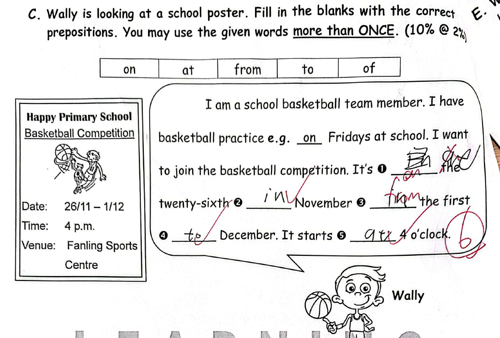 |
待抽取 |
截图题 / 英语改错（1 题）
| ID | 题目 | 答案 | 题图 | 状态 |
|---|---|---|---|---|
| EN-IMG-2026-09-20-002 | D. Proofreading: correct the underlined mistakes in the screenshot. | 1. can; 2. want; 3. play; 4. on; 5. book; 6. jeans; 7. in | 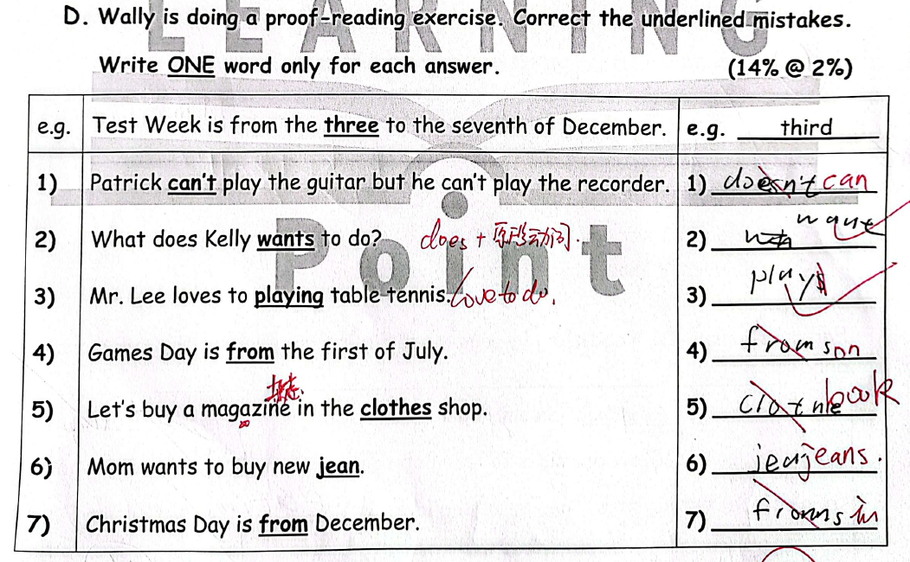 |
待抽取 |
截图题 / 运动与乐器填空（1 题）
| ID | 题目 | 答案 | 题图 | 状态 |
|---|---|---|---|---|
| EN-IMG-2026-09-20-003 | A. Children in the park: fill in the words shown in the screenshot. | 1. (the) piano; 2. basketball; 3. table tennis; 4. badminton; 5. football; 6. Chinese chess; 7. the violin; 8. the flute | 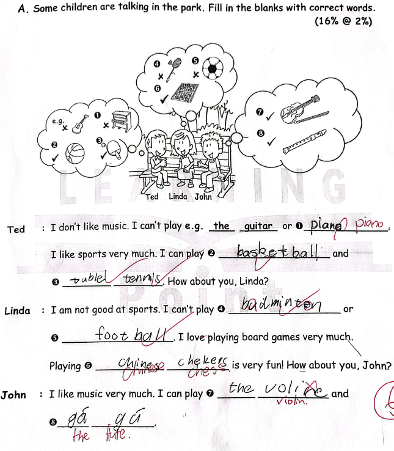 |
待抽取 |
截图题 / 活动喜好与时间介词（1 题）
| ID | 题目 | 答案 | 题图 | 状态 |
|---|---|---|---|---|
| EN-IMG-2026-09-21-001 | William and Martin: favourite activities | 1. likes playing; on; 2. likes playing the; at; 3. like swimming at the beach; in summer; 4. likes doing the high; on; 5. I like playing table; on Saturday | 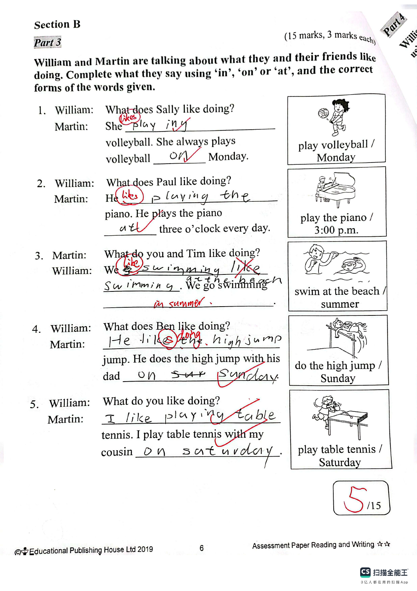 |
已抽取 |
截图题 / 动物园时态（1 题）
| ID | 题目 | 答案 | 题图 | 状态 |
|---|---|---|---|---|
| EN-IMG-2026-09-21-002 | William at the zoo | 1. am sitting; 2. are eating; 3. are; 4. like; 5. have; 6. is not moving; 7. is sleeping; 8. are not doing | 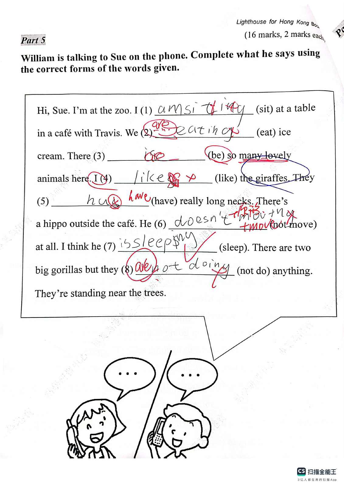 |
待抽取 |
截图题 / 生日派对时态（1 题）
| ID | 题目 | 答案 | 题图 | 状态 |
|---|---|---|---|---|
| EN-IMG-2026-09-21-003 | Toby’s birthday party | 1. is; 2. are having; 3. is cutting; 4. are eating; 5. is drinking; 6. are sitting; 7. are watching; 8. are laughing; 9. is playing; 10. are | 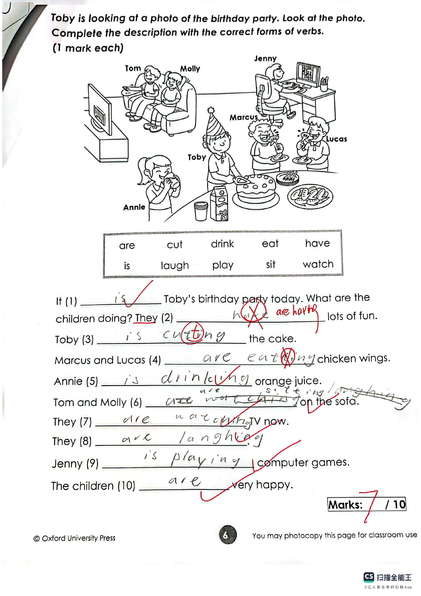 |
待抽取 |
截图题 / 代词（4 题）
| ID | 题目 | 答案 | 题图 | 状态 |
|---|---|---|---|---|
| EN-IMG-2026-09-21-004 | Ethan’s bedroom and cats | 1. my; 2. your; 3. Its; 4. her; 5. it; 6. They; 7. His; 8. She; 9. them; 10. us | 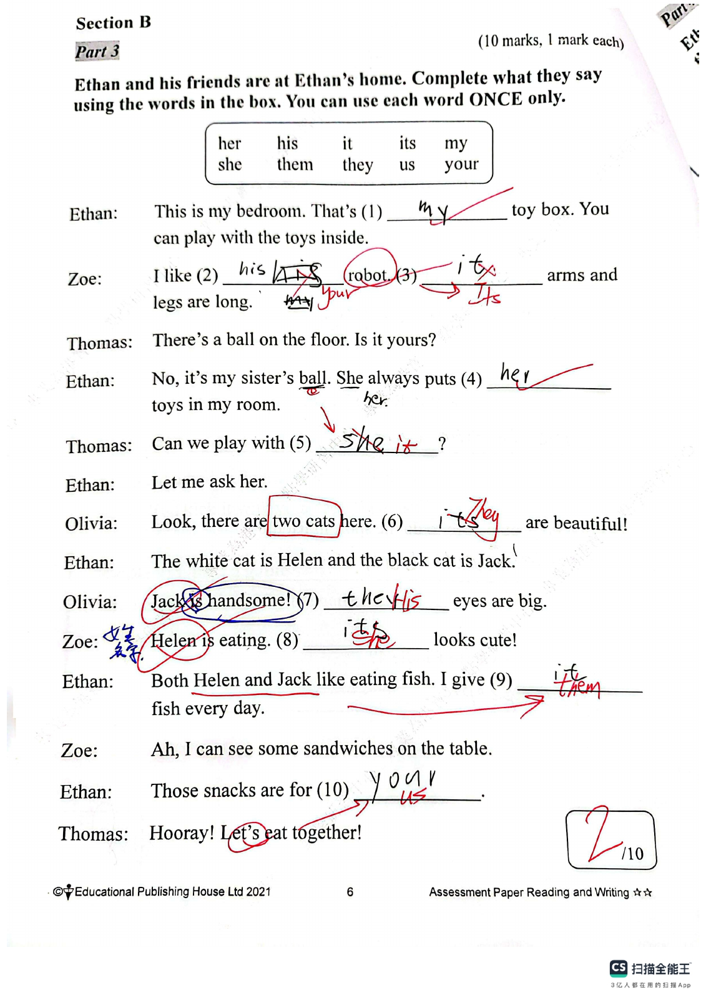 |
待抽取 |
| EN-IMG-2026-09-21-008 | William and his mother | 1. your; 2. my; 3. it; 4. his; 5. them; 6. him; 7. me; 8. her; 9. their | 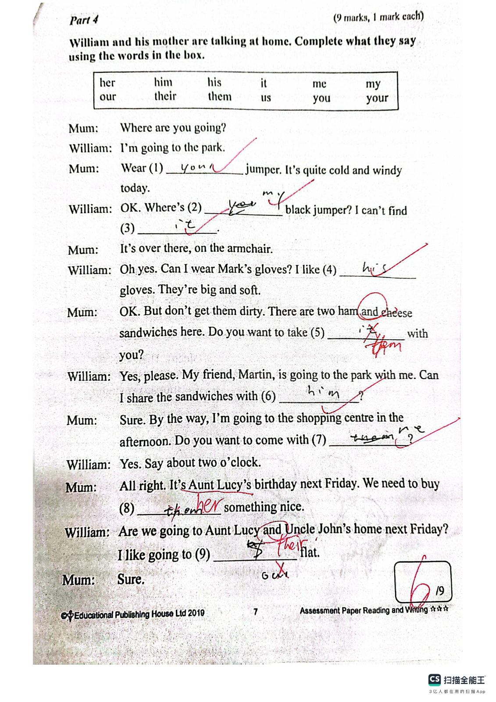 |
待抽取 |
| EN-IMG-2026-09-21-035 | Cindy’s postcard from Thailand | 1. our; 2. me; 3. his; 4. him; 5. my; 6. it; 7. us |  |
待抽取 |
| EN-IMG-2026-09-21-050 | Kitty’s family and friend | 1. She; 2. them; 3. he; 4. me; 5. They; 6. It; 7. it; 8. We | 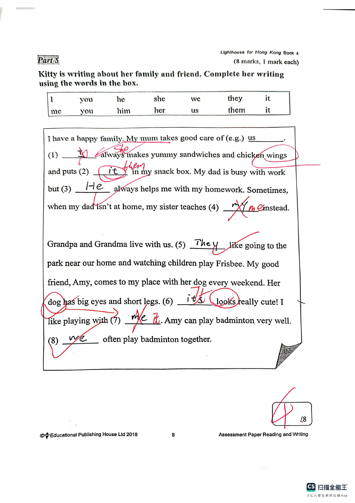 |
待抽取 |
截图题 / 职业与衣物（1 题）
| ID | 题目 | 答案 | 题图 | 状态 |
|---|---|---|---|---|
| EN-IMG-2026-09-21-005 | What do we wear? | 1. police officer; 2. tie; 3. shopkeeper; 4. watch; 5. firefighter; 6. hair clip; 7. postman; 8. belt | 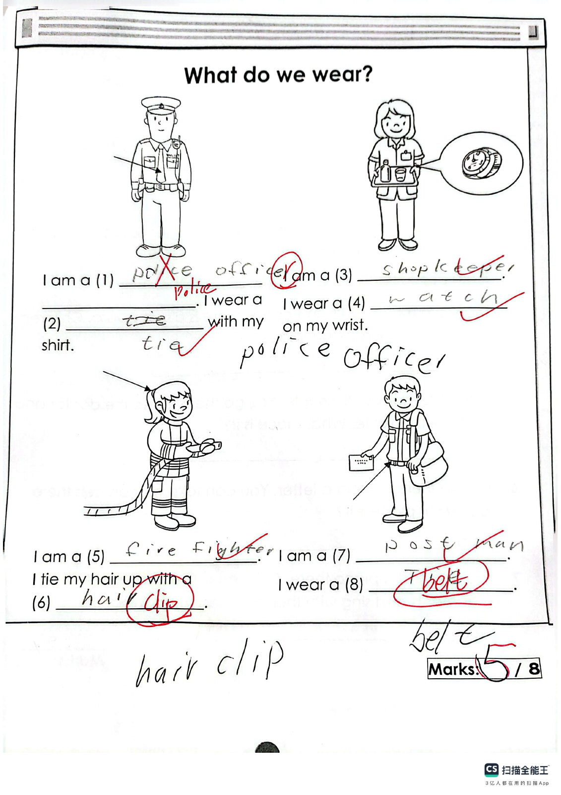 |
待抽取 |
截图题 / 时态（6 题）
| ID | 题目 | 答案 | 题图 | 状态 |
|---|---|---|---|---|
| EN-IMG-2026-09-21-006 | Game Day! | 1. play; 2. go; 3. throws; 4. is; 5. wins; 6. covers; 7. find; 8. know; 9. hiding | 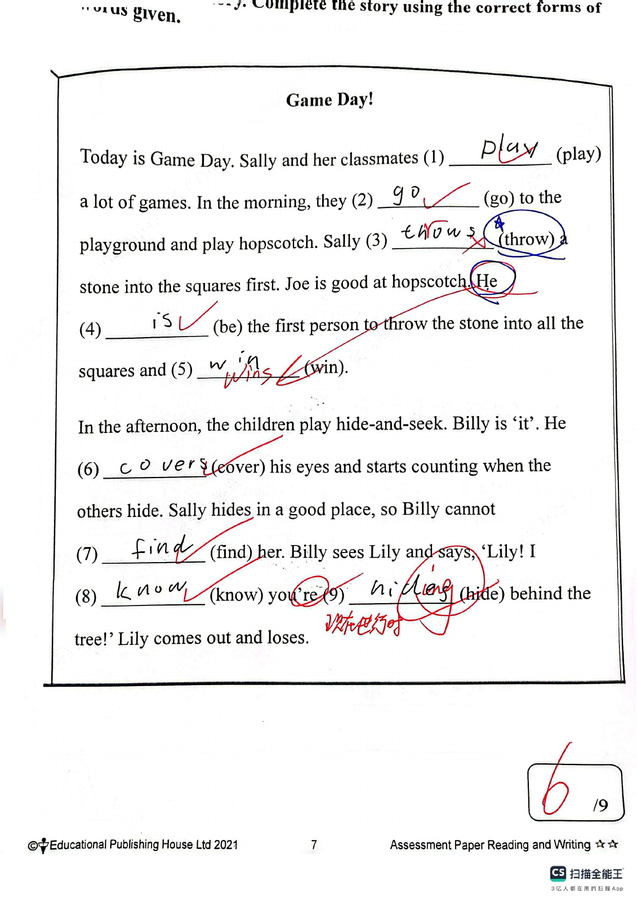 |
待抽取 |
| EN-IMG-2026-09-21-010 | Summer in Hong Kong | 1. go; 2. have; 3. wear; 4. does not like; 5. likes; 6. Do / like; 7. is; 8. is hanging; 9. is feeding; 10. are / doing | 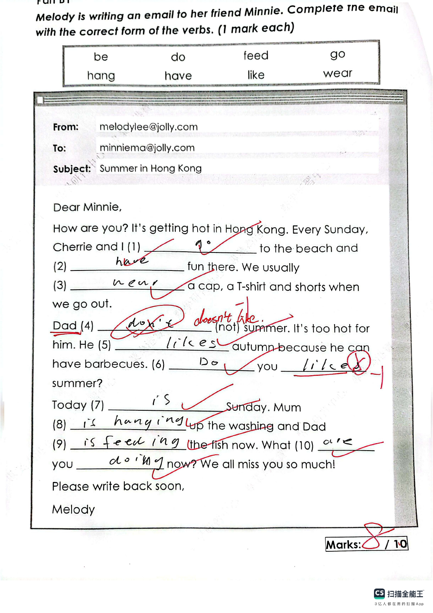 |
已抽取 |
| EN-IMG-2026-09-21-023 | Simple present and present continuous | 1. is climbing; 2. have; 3. skates; 4. are running; 5. goes; 6. visit; 7. draws; 8. is singing | 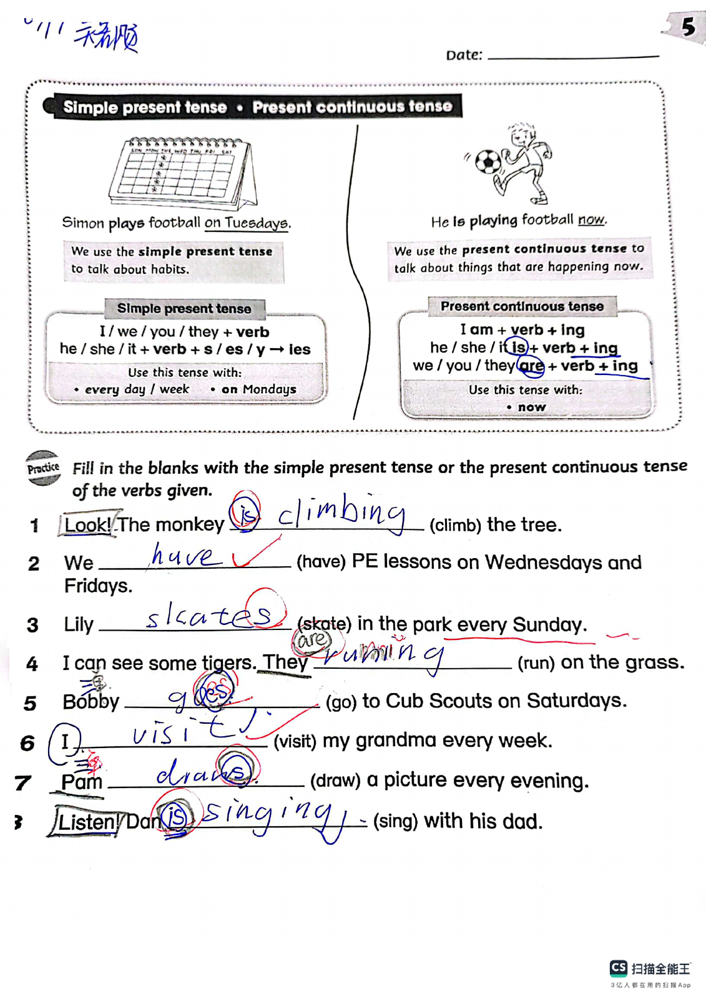 |
已抽取 |
| EN-IMG-2026-09-21-043 | Tigers | 1. live; 2. eat; 3. do not eat; 4. has; 5. looking; 6. says; 7. Study | 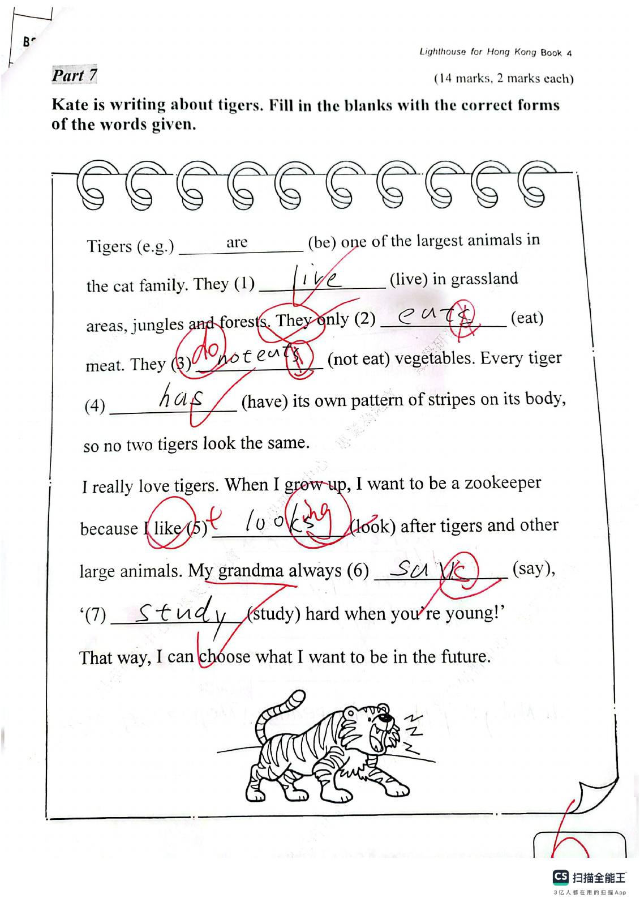 |
待抽取 |
| EN-IMG-2026-09-21-052 | Interview with musician Joe Lee | 1. practise; 2. play; 3. am; 4. play; 5. going; 6. likes; 7. go; 8. improve | 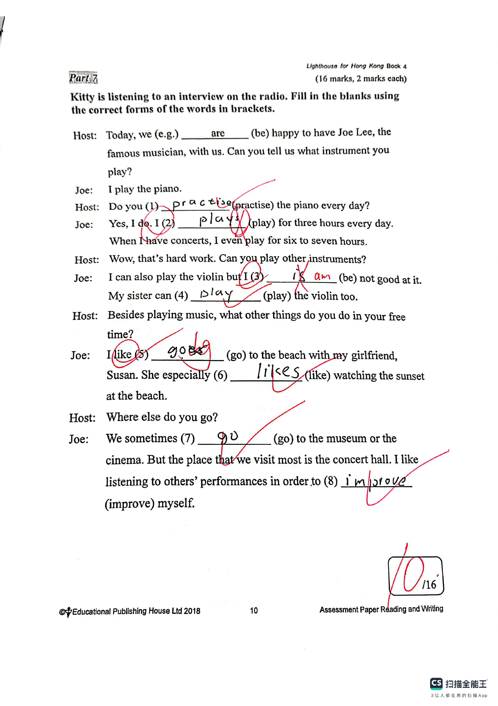 |
已抽取 |
| EN-IMG-2026-09-21-056 | Gary’s robot pet | 1. runs; 2. likes; 3. are playing; 4. is chasing; 5. do not eat; 6. sing; 7. want | 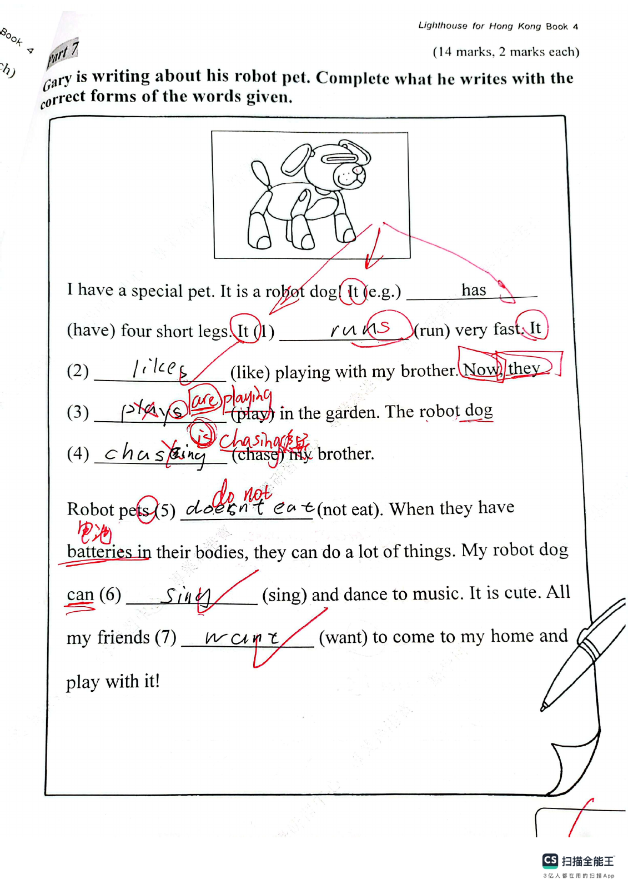 |
待抽取 |
截图题 / 活动喜好与问句（1 题）
| ID | 题目 | 答案 | 题图 | 状态 |
|---|---|---|---|---|
| EN-IMG-2026-09-21-007 | Ethan talks to his mum | 1. in / likes going swimming in; 2. on / likes playing the violin on; 3. like doing in winter / likes having hotpot in winter; 4. What does Sally like doing on Thursday? / She likes reading books on Thursday.; 5. What do Bob and Kelvin like doing on Sunday? / They like playing table tennis on Sunday. | 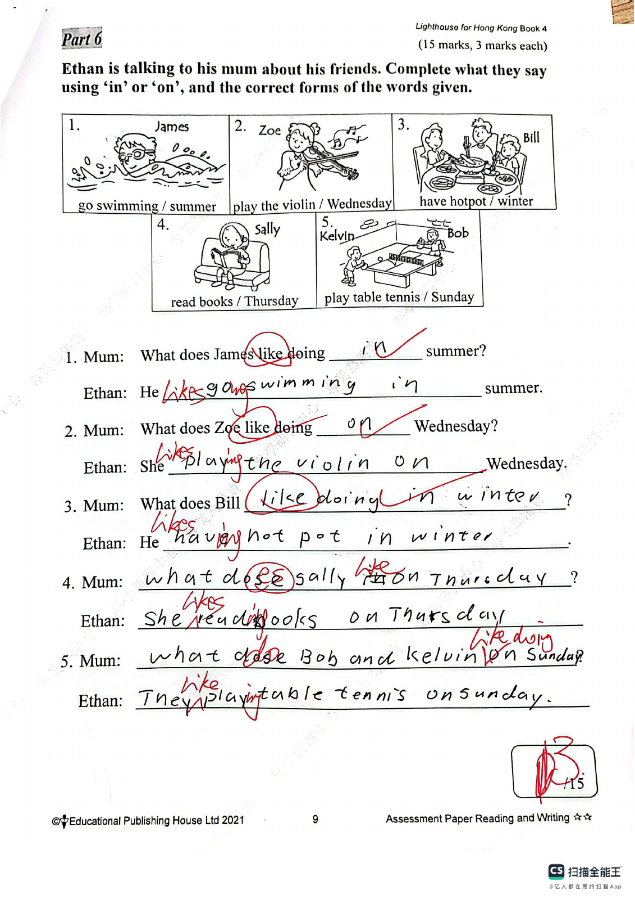 |
待抽取 |
截图题 / 职业造句（1 题）
| ID | 题目 | 答案 | 题图 | 状态 |
|---|---|---|---|---|
| EN-IMG-2026-09-21-011 | Our parents’ jobs | 1. She catches bad people.; 2. He is a driver. He drives a taxi.; 3. She is a nurse. She looks after sick people.; 4. He is a waiter. He serves food. |  |
已抽取 |
截图题 / 时间介词（4 题）
| ID | 题目 | 答案 | 题图 | 状态 |
|---|---|---|---|---|
| EN-IMG-2026-09-21-012 | Sarah and Emma | 依次：in; at; in; on; in; at; at; at | 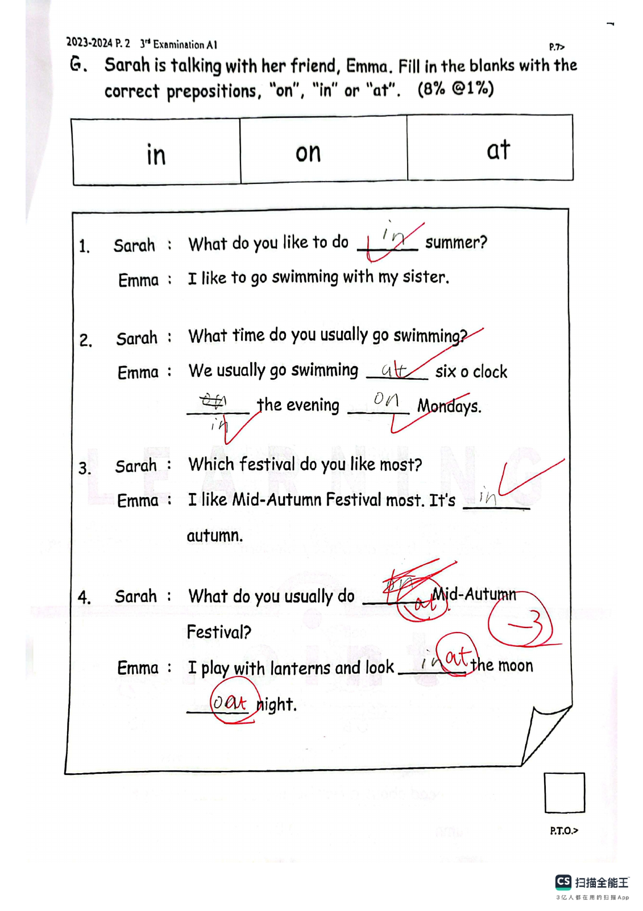 |
待抽取 |
| EN-IMG-2026-09-21-040 | Kate and her father | 1. in; 2. at; 3. at; 4. on; 5. in; 6. on; 7. in; 8. at | 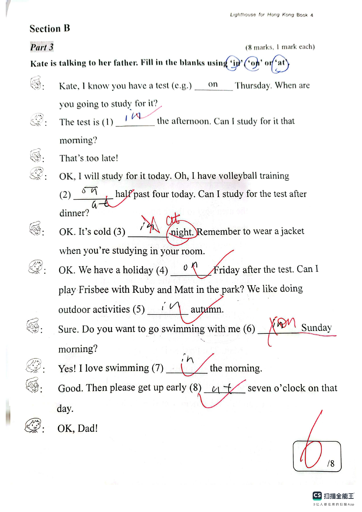 |
待抽取 |
| EN-IMG-2026-09-21-046 | Sharon and Sally’s holiday | 1. in; 2. on; 3. at; 4. in; 5. on; 6. at |  |
已抽取 |
| EN-IMG-2026-09-21-053 | Gary and Mark | 1. at; 2. on; 3. in; 4. in; 5. on; 6. in; 7. in; 8. at | 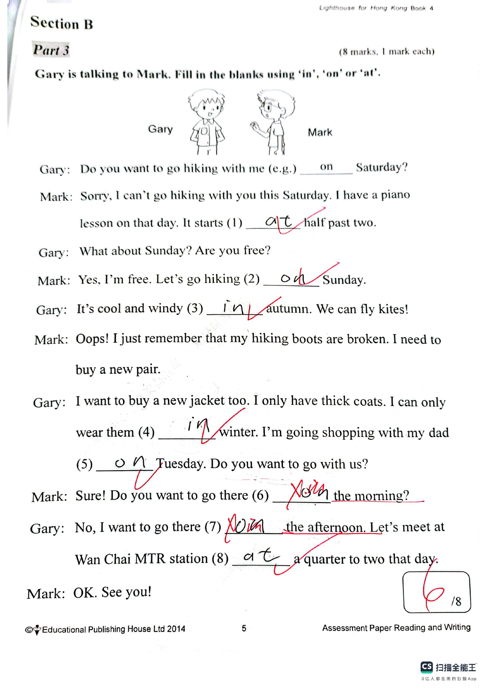 |
已抽取 |
截图题 / 时态选词（1 题）
| ID | 题目 | 答案 | 题图 | 状态 |
|---|---|---|---|---|
| EN-IMG-2026-09-21-013 | Learn more about some wild animals | 1. is; 2. lives; 3. has; 4. weighs; 5. looks; 6. shoots; 7. swim; 8. make; 9. is sleeping; 10. moves; 11. comes; 12. drags | 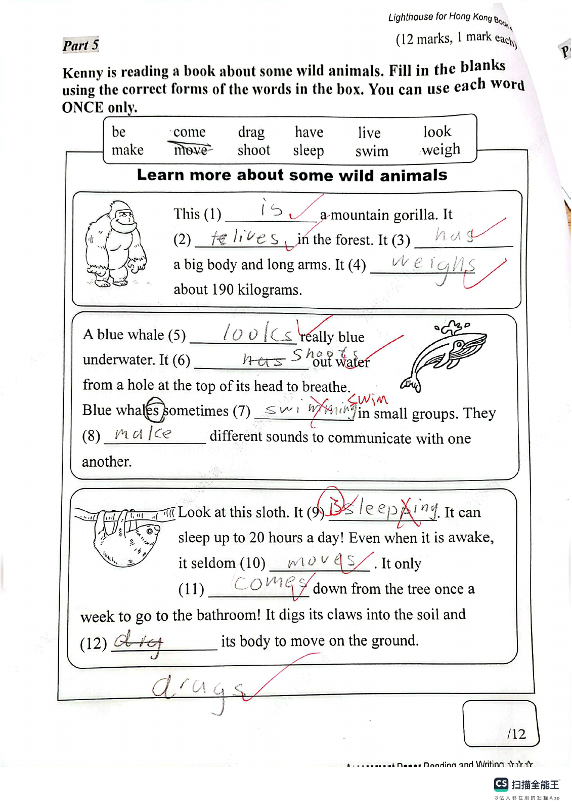 |
待抽取 |
截图题 / 数量词与游戏（1 题）
| ID | 题目 | 答案 | 题图 | 状态 |
|---|---|---|---|---|
| EN-IMG-2026-09-21-014 | Kenny’s favourite games | 1. No / tug of war; 2. Every / likes hopscotch; 3. Some / hide-and-seek; 4. All / Frisbee; 5. Some / tag | 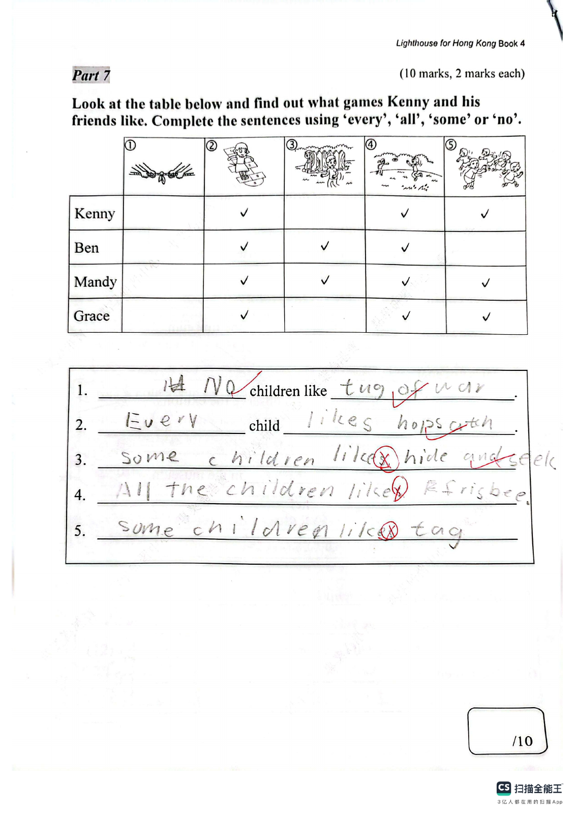 |
待抽取 |
截图题 / 活动造句（1 题）
| ID | 题目 | 答案 | 题图 | 状态 |
|---|---|---|---|---|
| EN-IMG-2026-09-21-015 | Kenny and his friends | 1. going hiking on Saturday; 2. going swimming in summer; 3. like having hotpot in winter; 4. likes playing table tennis on Wednesday; 5. like flying kites in autumn; 6. likes visiting museums on Sunday | 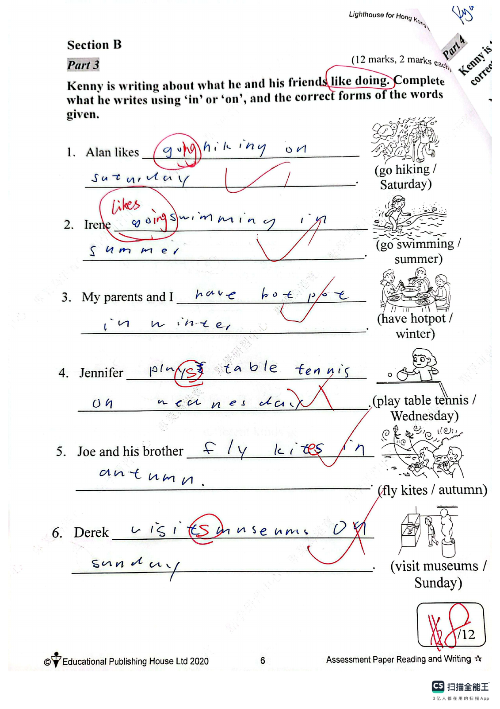 |
待抽取 |
截图题 / 代词选择（1 题）
| ID | 题目 | 答案 | 题图 | 状态 |
|---|---|---|---|---|
| EN-IMG-2026-09-21-016 | Kenny and his mum | 1. me; 2. us; 3. it; 4. my; 5. them; 6. your; 7. My; 8. her; 9. their; 10. him; 11. our; 12. his | 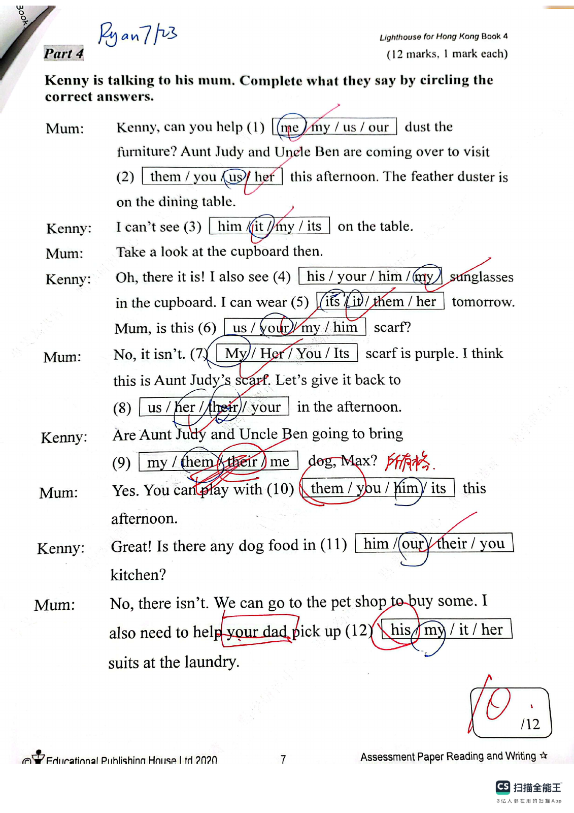 |
待抽取 |
截图题 / 时态填空（1 题）
| ID | 题目 | 答案 | 题图 | 状态 |
|---|---|---|---|---|
| EN-IMG-2026-09-21-017 | Wild animals: given verbs | 1. is; 2. lives; 3. has; 4. weighs; 5. looks; 6. has; 7. shoots; 8. makes; 9. sleeps; 10. moves; 11. comes; 12. digs |  |
待抽取 |
截图题 / 生日派对对话（1 题）
| ID | 题目 | 答案 | 题图 | 状态 |
|---|---|---|---|---|
| EN-IMG-2026-09-21-018 | David’s birthday party | 1. Do / want; 2. am having; 3. love; 4. is; 5. is / doing; 6. is writing; 7. are singing; 8. has; 9. is opening; 10. Does / love; 11. are taking; 末题（原稿又标10）are playing | 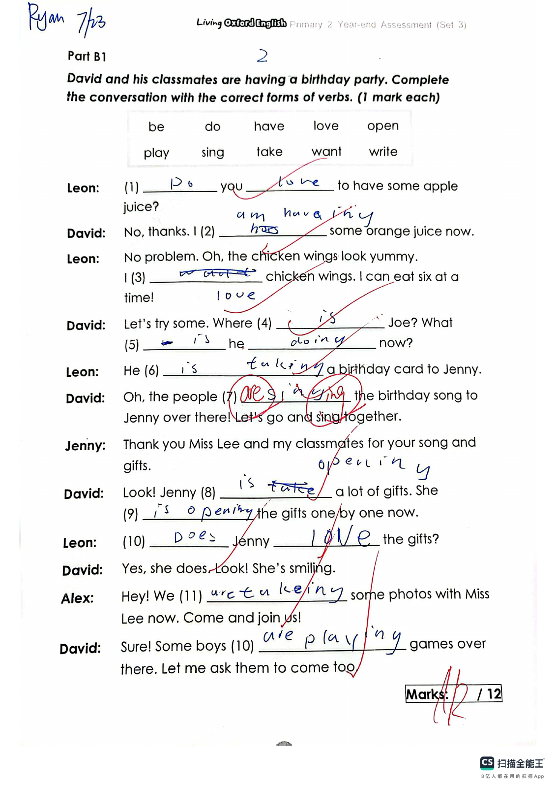 |
待抽取 |
截图题 / 改错（1 题）
| ID | 题目 | 答案 | 题图 | 状态 |
|---|---|---|---|---|
| EN-IMG-2026-09-21-019 | Ann’s proofreading quiz | 1. eat → eating; 2. do → does; 3. watch → watching; 4. at → to; 5. but → and; 6. is → are; 7. fogy → foggy; 8. and → or | 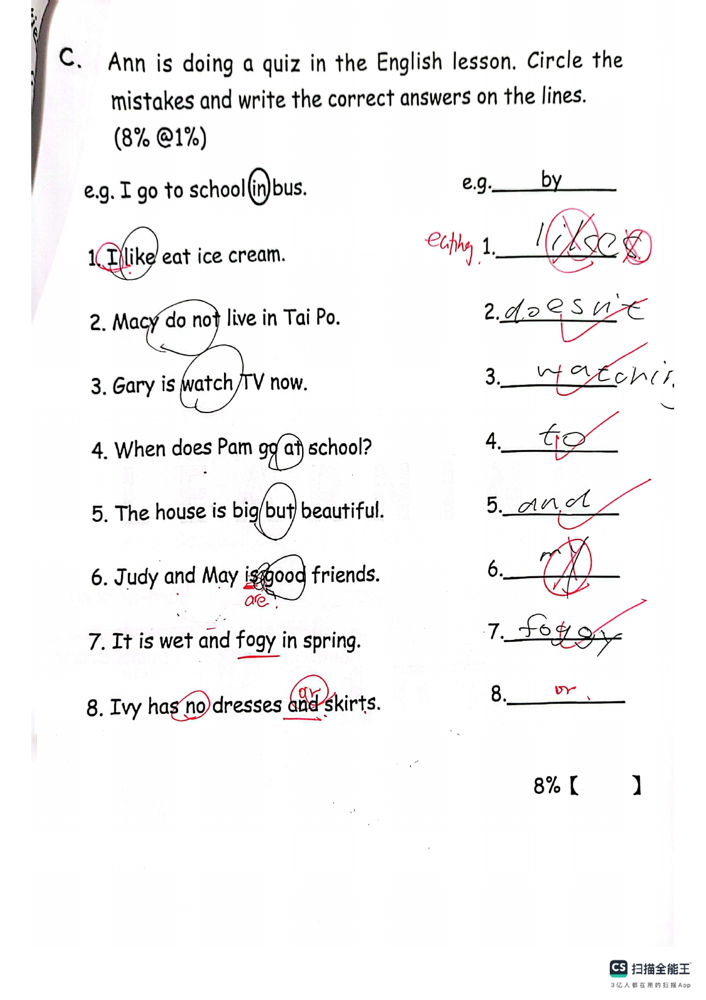 |
待抽取 |
截图题 / 人物形容词（1 题）
| ID | 题目 | 答案 | 题图 | 状态 |
|---|---|---|---|---|
| EN-IMG-2026-09-21-020 | Ann’s classmates | 1. polite; 2. lazy; 3. hard-working; 4. rude; 5. honest | 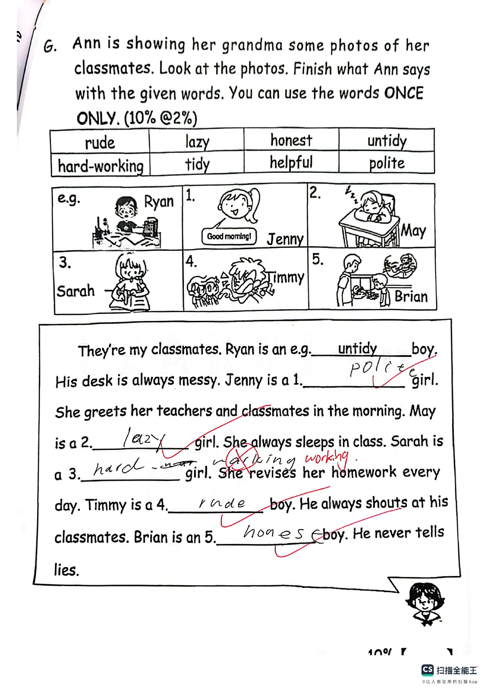 |
待抽取 |
截图题 / 疑问词与时态（1 题）
| ID | 题目 | 答案 | 题图 | 状态 |
|---|---|---|---|---|
| EN-IMG-2026-09-21-022 | Karen: birthday plans and Sports Day | C: 1. When; 2. What; 3. Where; 4. What; 5. Why. D: 1. play; 2. wins; 3. am; 4. is running; 5. are saying | 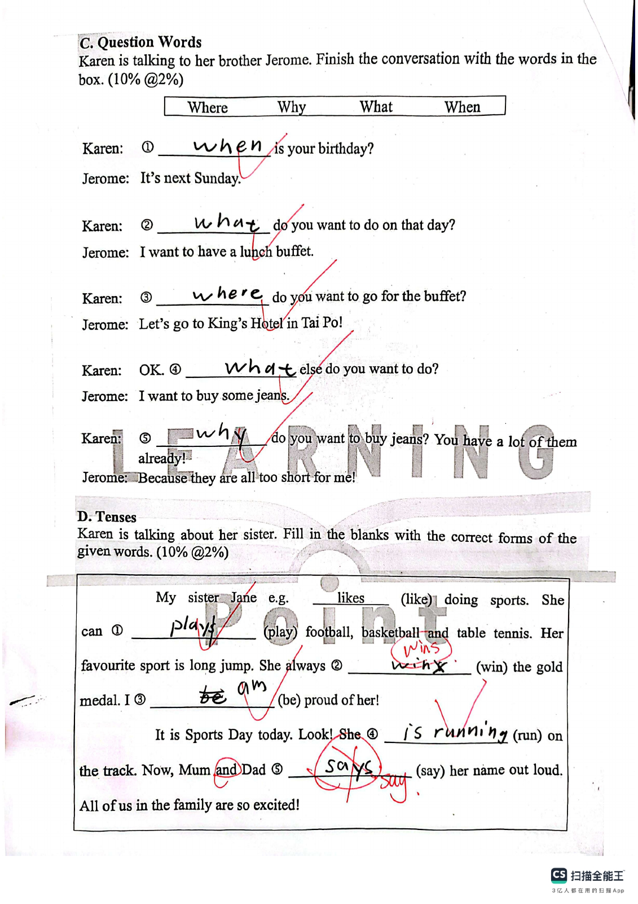 |
待抽取 |
截图题 / 季节活动词组（1 题）
| ID | 题目 | 答案 | 题图 | 状态 |
|---|---|---|---|---|
| EN-IMG-2026-09-21-025 | Matthew’s friends and seasons | 1. eat ice cream; 2. have hotpot; 3. go to the swimming pool; 4. play on the swing; 5. have a barbecue; 6. swim in the swimming pool | 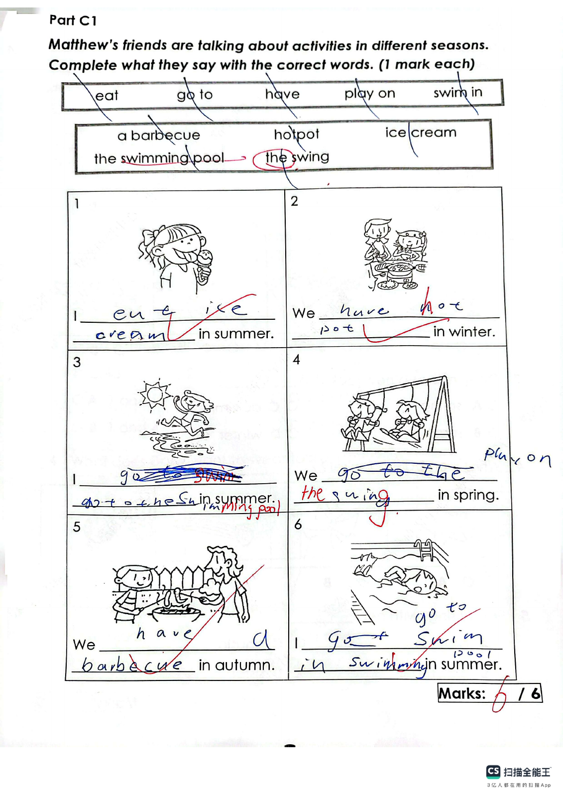 |
待抽取 |
截图题 / 时态与介词（1 题）
| ID | 题目 | 答案 | 题图 | 状态 |
|---|---|---|---|---|
| EN-IMG-2026-09-21-026 | John’s weekly activities | 1. on; 2. in; 3. does not play; 4. goes; 5. draw; 6. on; 7. at; 8. do not play; 9. on; 10. at | 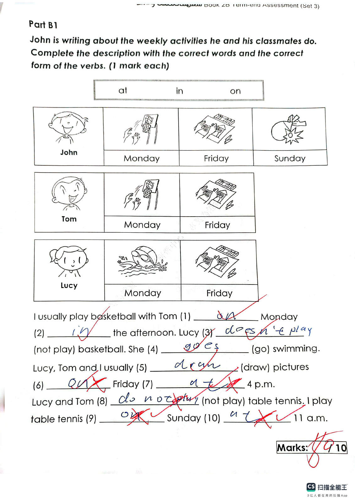 |
待抽取 |
截图题 / 助动词与物主代词（1 题）
| ID | 题目 | 答案 | 题图 | 状态 |
|---|---|---|---|---|
| EN-IMG-2026-09-21-027 | John and Jane’s seasons chant | 1. Do; 2. your; 3. do; 4. Does; 5. her; 6. does; 7. Does; 8. his; 9. does not; 10. Do; 11. their; 12. do not | 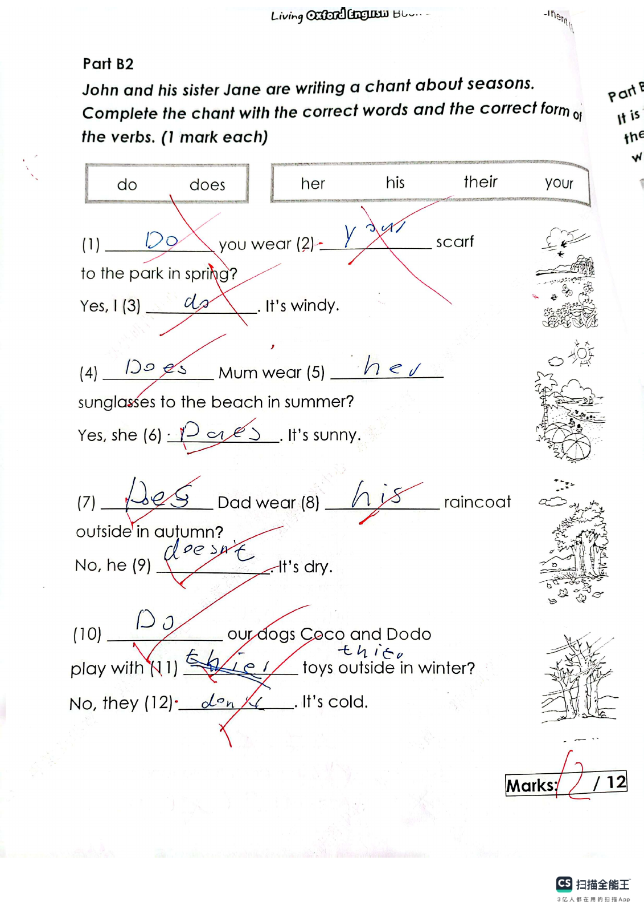 |
待抽取 |
截图题 / 季节活动（1 题）
| ID | 题目 | 答案 | 题图 | 状态 |
|---|---|---|---|---|
| EN-IMG-2026-09-21-028 | Kathy’s seasonal activities | 1. go to the park; 2. swim in the sea; 3. eat ice lollies; 4. go to the beach; 5. go hiking; 6. have a barbecue | 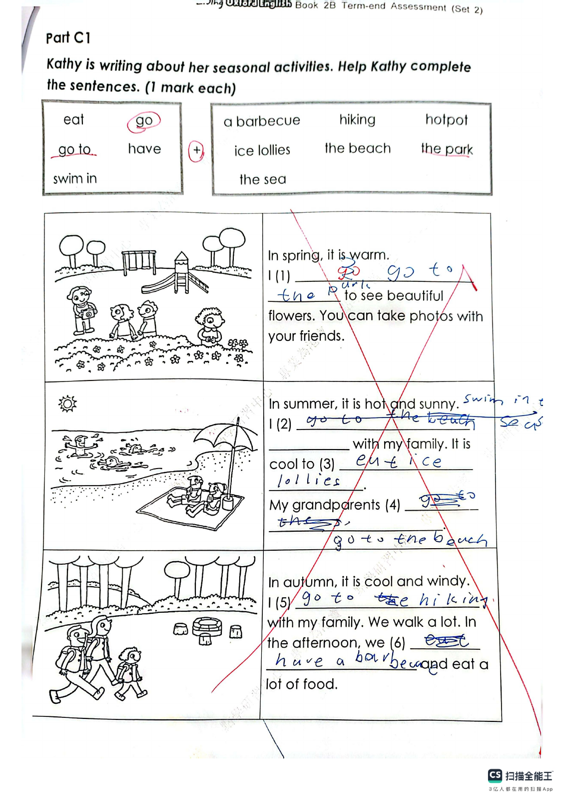 |
待抽取 |
截图题 / 大小写与be动词（1 题）
| ID | 题目 | 答案 | 题图 | 状态 |
|---|---|---|---|---|
| EN-IMG-2026-09-21-029 | Capital letters; use is, am or are | A: 1. Jason travelled to America last summer. 2. People celebrate Diwali in India. 3. The hottest month in Hong Kong is August. B: 1. is; 2. are / is; 3. are; 4. Is / is | 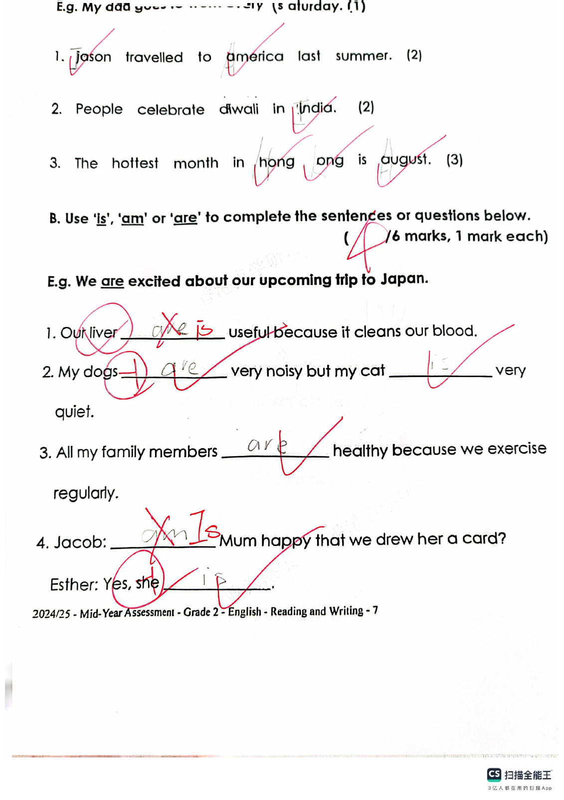 |
待抽取 |
截图题 / 介词与has/have（1 题）
| ID | 题目 | 答案 | 题图 | 状态 |
|---|---|---|---|---|
| EN-IMG-2026-09-21-030 | Prepositions; has or have | 介词：1. in; 2. On; 3. on / in; 4. in; 5. on. E: 1. has; 2. have; 3. has; 4. has; 5. have | 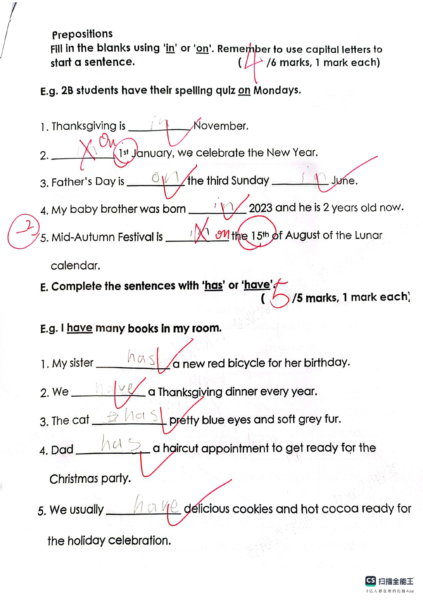 |
已抽取 |
截图题 / 词汇选词（1 题）
| ID | 题目 | 答案 | 题图 | 状态 |
|---|---|---|---|---|
| EN-IMG-2026-09-21-031 | Choose the most suitable word | 1. neighbourhood; 2. toes; 3. amazing; 4. frown; 5. different; 6. plain; 7. royal; 8. rain; 9. brave; 10. costume | 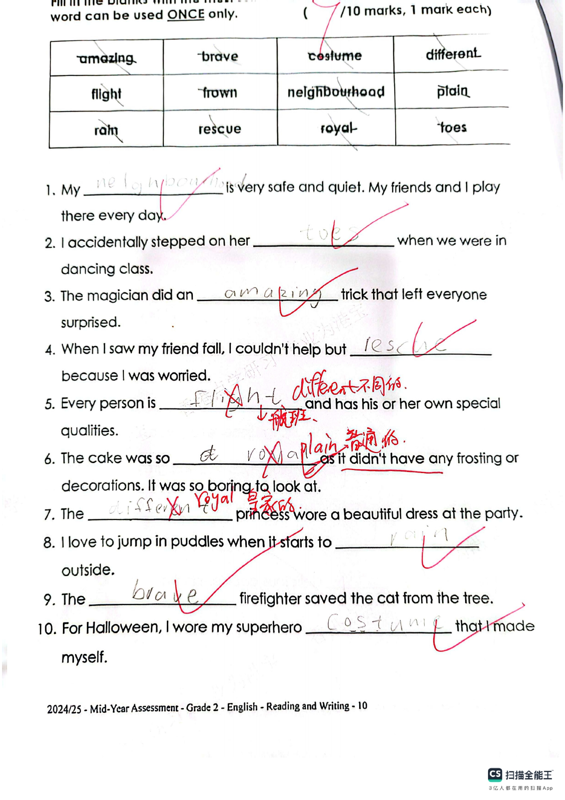 |
待抽取 |
截图题 / 职业与工作地点（1 题）
| ID | 题目 | 答案 | 题图 | 状态 |
|---|---|---|---|---|
| EN-IMG-2026-09-21-033 | Melody’s neighbours (two pages) | 1. post office; 2. restaurant; 3. clinic; 4. police station; 5. firefighter; 6. driver; 7. doctor; 8. shopkeeper | 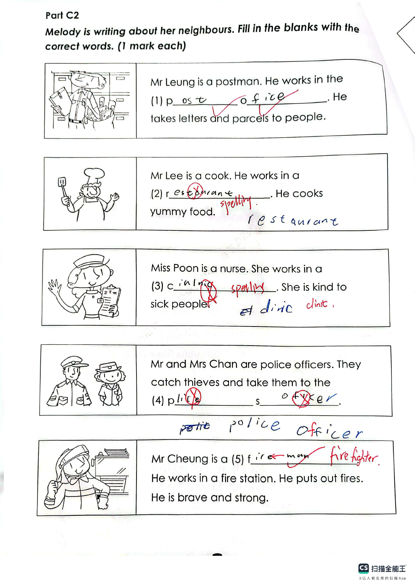 |
待抽取 |
截图题 / 理想职业造句（1 题）
| ID | 题目 | 答案 | 题图 | 状态 |
|---|---|---|---|---|
| EN-IMG-2026-09-21-036 | Cindy and her friends’ future jobs | 1. wants to be a police officer; 2. wants to be a pilot; 3. Joyce wants to be a teacher.; 4. I want to be a doctor.; 5. Simon wants to be an astronaut. | 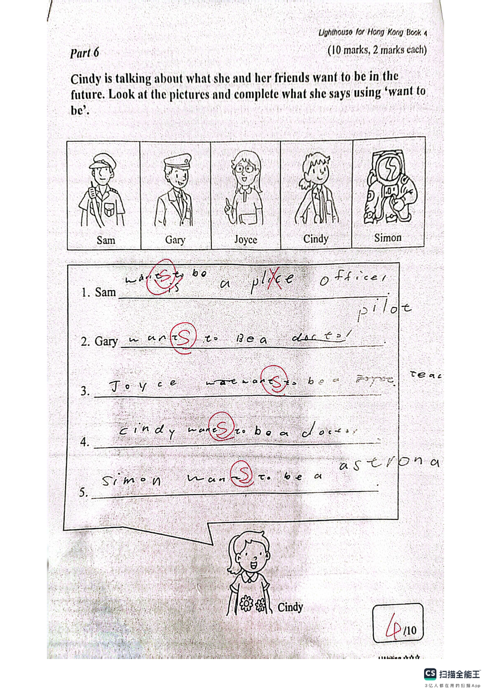 |
已抽取 |
截图题 / 活动喜好造句（1 题）
| ID | 题目 | 答案 | 题图 | 状态 |
|---|---|---|---|---|
| EN-IMG-2026-09-21-037 | Cindy’s classmates’ favourite activities | 1. playing the violin; 2. George and Paul like playing table tennis.; 3. Chris likes playing video games.; 4. Ashley likes watching TV.; 5. Sophia likes playing volleyball. | 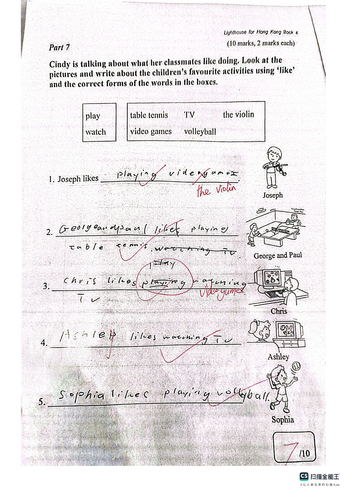 |
待抽取 |
截图题 / 时态与方位介词（1 题）
| ID | 题目 | 答案 | 题图 | 状态 |
|---|---|---|---|---|
| EN-IMG-2026-09-21-038 | Chris and his friends at the beach | 1. are swimming; 2. are having; 3. behind; 4. in front of; 5. are / doing; 6. are reading; 7. next to; 8. is / doing; 9. is eating | 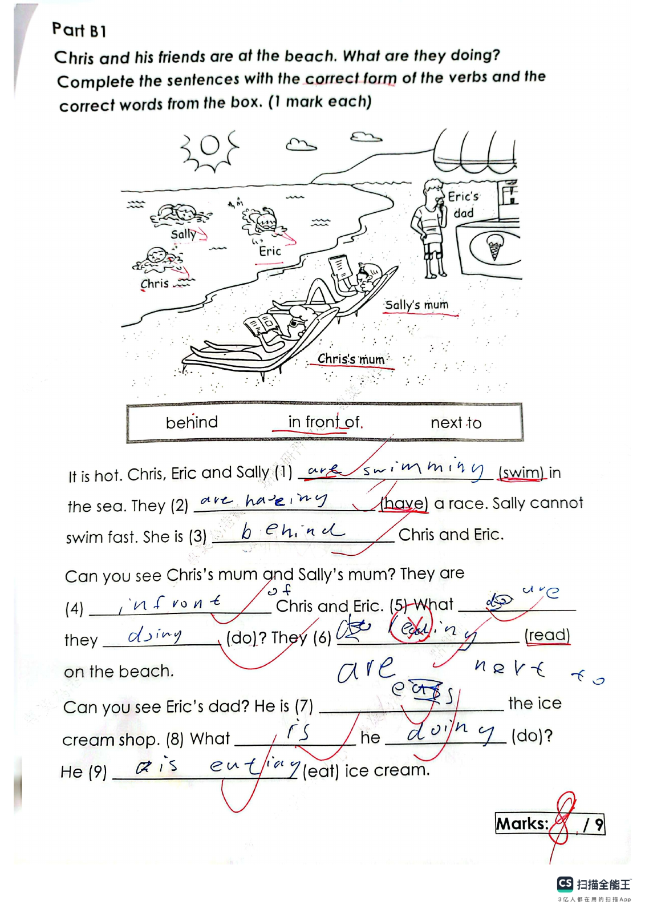 |
待抽取 |
截图题 / 助动词与所有格（1 题）
| ID | 题目 | 答案 | 题图 | 状态 |
|---|---|---|---|---|
| EN-IMG-2026-09-21-039 | Chris and Sally’s school picnic | 1. Do / have; 2. I do; 3. Do / have; 4. I do not; 5. Eric’s; 6. Do / have; 7. I do; 8. Tim’s; 9. Does / have; 10. he does; 11. Sam’s | 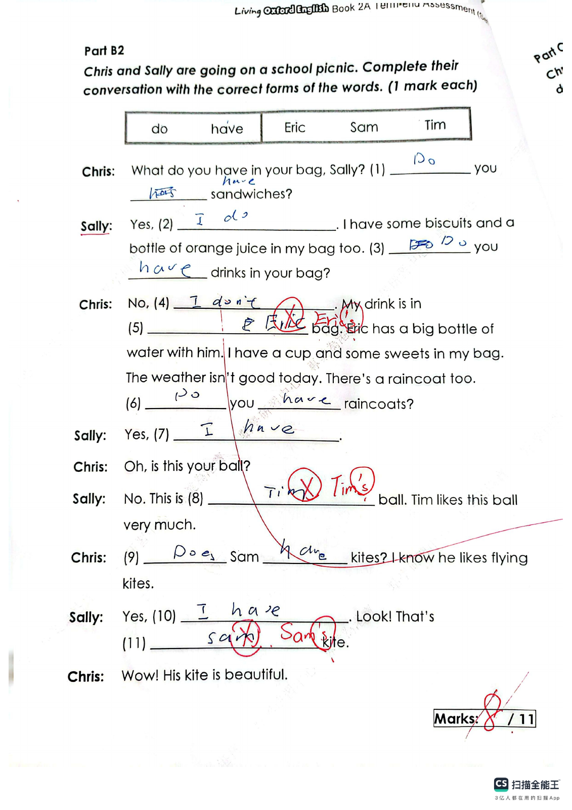 |
待抽取 |
截图题 / 数量词与运动队（1 题）
| ID | 题目 | 答案 | 题图 | 状态 |
|---|---|---|---|---|
| EN-IMG-2026-09-21-041 | Kate’s sports teams table | 1. Some children are in the basketball team.; 2. All children are in the badminton team.; 3. No children are in the table tennis team.; 4. Some children are in the volleyball team. | 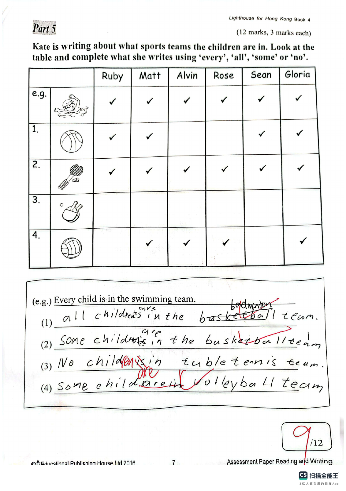 |
待抽取 |
截图题 / 情态动词（1 题）
| ID | 题目 | 答案 | 题图 | 状态 |
|---|---|---|---|---|
| EN-IMG-2026-09-21-042 | Zoo animals and rules | 1. cannot; 2. must not; 3. can; 4. can; 5. must; 6. must not | 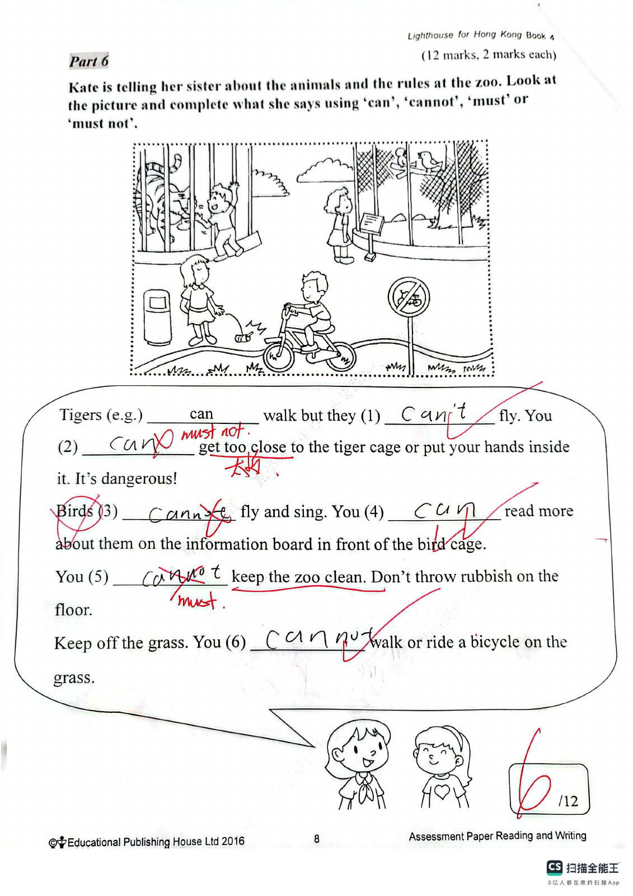 |
待抽取 |
截图题 / 宾格代词（2 题）
| ID | 题目 | 答案 | 题图 | 状态 |
|---|---|---|---|---|
| EN-IMG-2026-09-21-044 | Sharon’s photo album | 1. them; 2. him; 3. it; 4. you; 5. us | 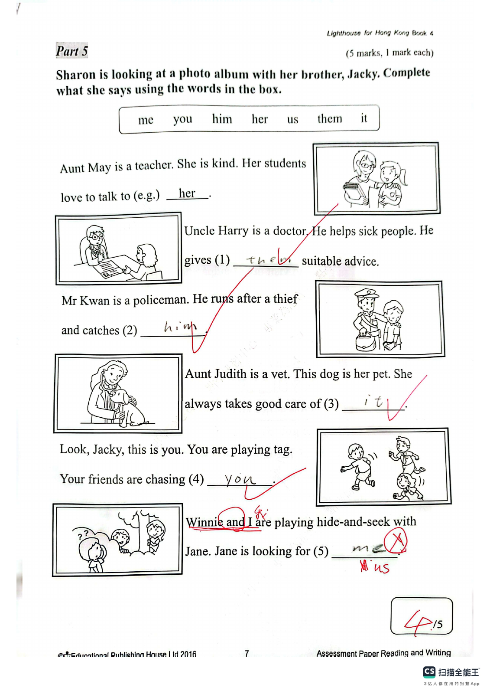 |
待抽取 |
| EN-IMG-2026-09-21-055 | The Chocolate Kingdom | 1. me; 2. you; 3. them; 4. it; 5. us; 6. him; 7. her | 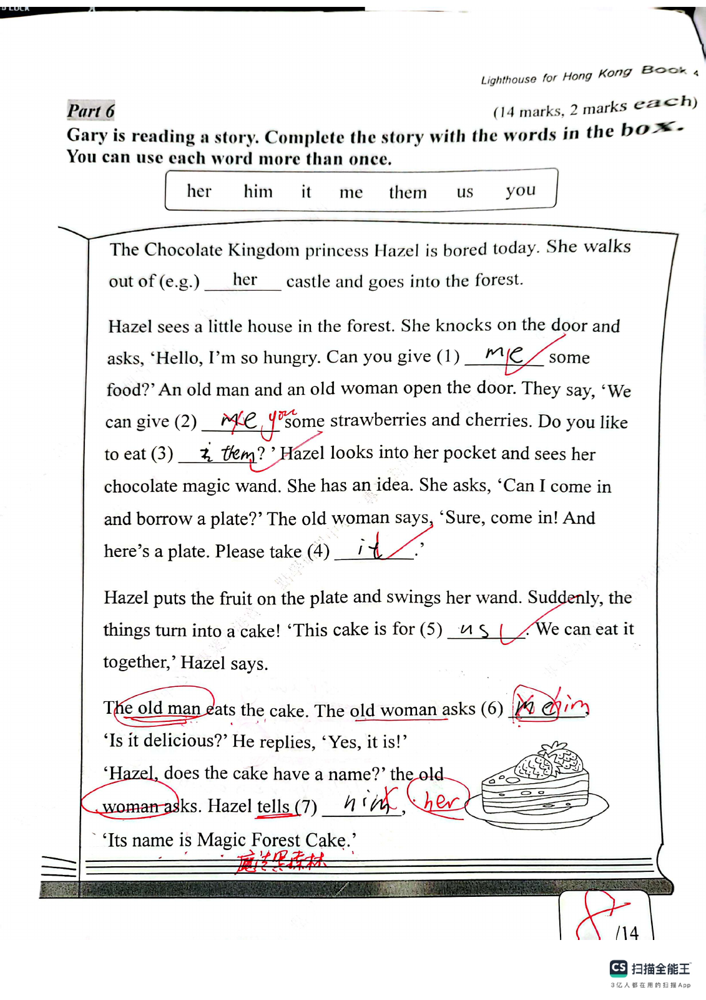 |
待抽取 |
截图题 / can与cannot造句（1 题）
| ID | 题目 | 答案 | 题图 | 状态 |
|---|---|---|---|---|
| EN-IMG-2026-09-21-045 | Gary’s storybook | 1. Can she fly?; 2. He cannot swim.; 3. He can dance.; 4. Can he sing? | 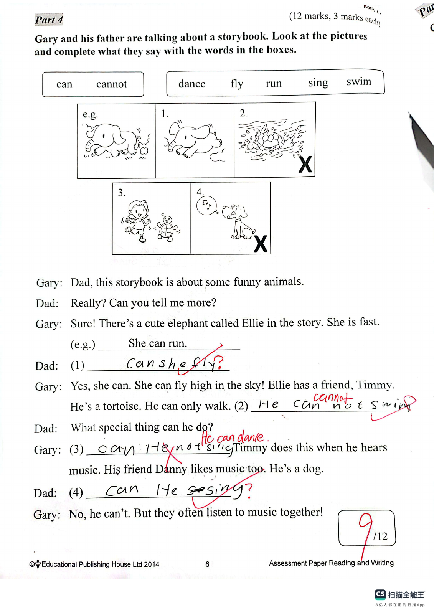 |
待抽取 |
截图题 / 人物形容词与介词（1 题）
| ID | 题目 | 答案 | 题图 | 状态 |
|---|---|---|---|---|
| EN-IMG-2026-09-21-048 | David’s classmates; Ken’s article | A: 1. honest; 2. polite; 3. tidy; 4. hard-working; 5. rude. B: 1. in; 2. on; 3. in; 4. by; 5. after; 6. at; 7. in; 8. to; 9. in; 10. with | 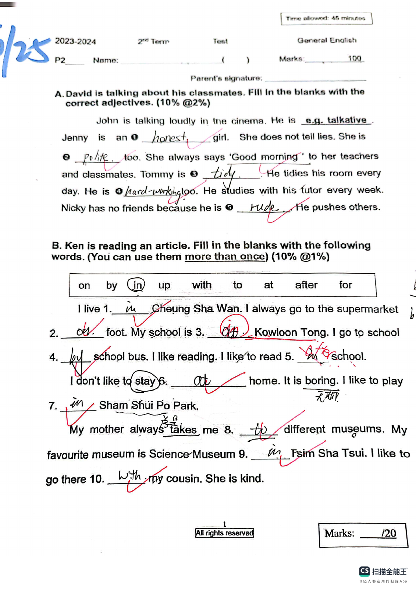 |
待抽取 |
截图题 / 数量词与职业（1 题）
| ID | 题目 | 答案 | 题图 | 状态 |
|---|---|---|---|---|
| EN-IMG-2026-09-21-051 | Kitty’s classmates’ future jobs | 1. All girls want to be teachers.; 2. All boys want to be firefighters.; 3. Some girls want to be nurses.; 4. No children want to be cooks. | 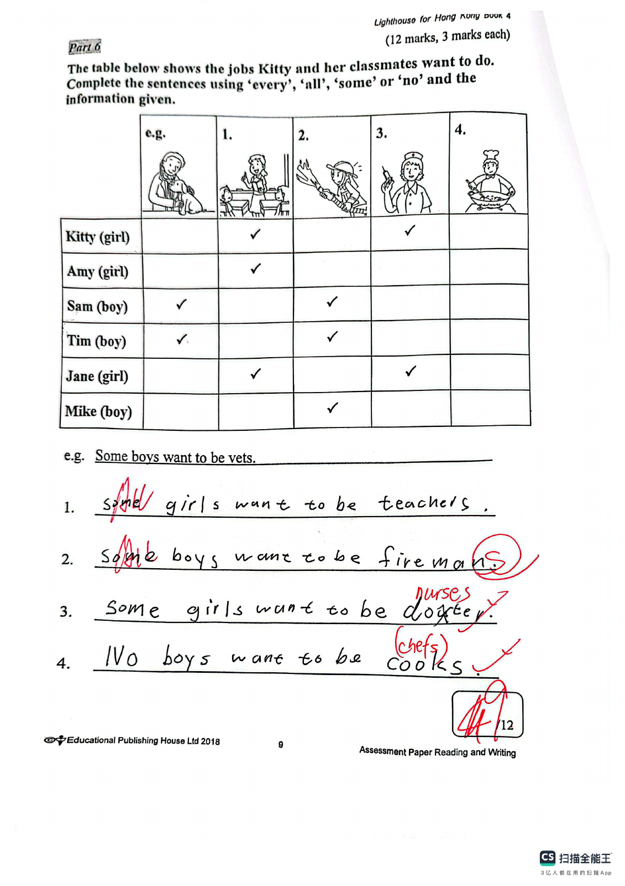 |
待抽取 |